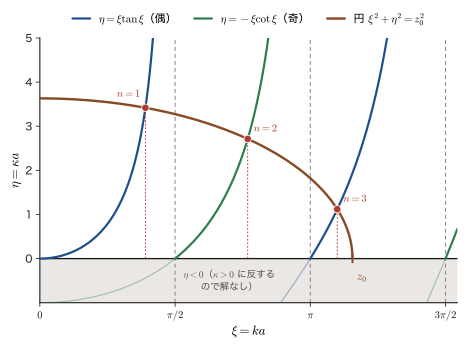
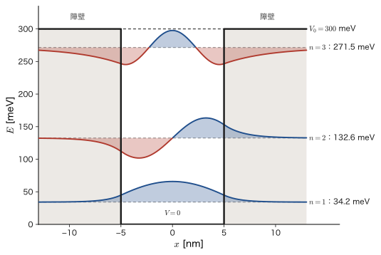
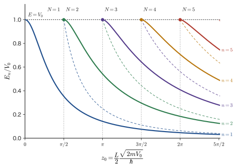
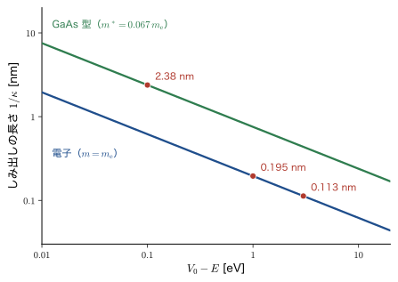
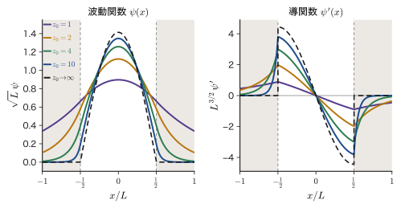
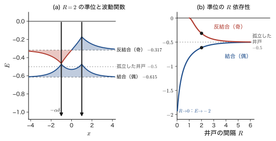

第11章有限井戸型ポテンシャル — しみ出しと束縛状態
前章の無限井戸では，壁は無限に高く，粒子は箱の外にはまったく出られなかった．しかし現実の壁の高さは有限である．半導体の薄膜でつくった量子井戸では，電子を閉じ込める壁の高さはせいぜい $0.3\ \mathrm{eV}$ 程度であり，原子や分子の中の電子を閉じ込めている力も有限である．壁の高さ $V_0$ が有限で，粒子のエネルギー $E$ が $V_0$ より低いとき，古典力学（AD 03 第4章 4.5 力学的エネルギーの保存則）では，粒子は井戸の中に閉じ込められたままで，壁の中には決して入れない．壁の中では運動エネルギーが負になってしまうからである．ところが量子力学では，波動関数は壁の中に指数関数的に減衰しながらしみ出す．粒子が壁の中に見いだされる確率は $0$ ではない．この章では，このしみ出しがどこから出てくるのか，そしてそのために，前章のとびとびのエネルギー準位がどう変わるのかを，一行も飛ばさずに計算する．
考え方は前章と同じである．ポテンシャルが一定の領域ごとに方程式を解き，領域の境目で波動関数とその傾きを滑らかにつなぐ．この「境目で値と傾きをそろえる」という条件は，密度の違う 2 本の弦をつないだときに，つなぎ目で変位と傾きが連続になる条件（AD 03 第14章 14.2）と同じ数学である．境目が 2 つ，領域が 3 つになるので，未知の定数は 4 個，条件式も 4 個になり，$4\times4$ の行列式が現れる．その行列式が $0$ になる条件がエネルギーを決める式であり，それは $\tan$ を含む方程式になる．代数的には解けないが，円と $\tan$ の曲線の交点として目で解くことができ（図解法），束縛状態がいくつあるか，準位がどう並ぶかが一目でわかる．しみ出しは，光が全反射するときに境界の向こう側へしみ出す光（AD 03 第14章 14.7）とも同じ性質のものである．
この章の結果は，半導体量子井戸（発光ダイオード，半導体レーザー，赤外検出器）の設計にそのまま使われる．また，井戸をきわめて狭く深い $\delta$ 関数の井戸にした極限と，それを 2 つ並べたときの結合状態と反結合状態への分裂は，分子軌道（マテリアル計算科学（AD 05））とバンド（固体物理学（AD 06））の出発点になる．
- 有限の高さの壁をもつ井戸を 3 つの領域に分けて解き，井戸の外で波動関数が $e^{-\kappa\abs{x}}$ のように減衰すること（しみ出し），しみ出しの長さが $1/\kappa$ であることを説明できること
- 波動関数と傾きの連続性から $4\times4$ の行列式を作り，余因子展開・Euler の公式・2 倍角の公式・因数分解を行を飛ばさずに実行して，量子化条件 $k\tan ka=\kappa$（偶）と $-k\cot ka=\kappa$（奇）を導けること．偶奇の方法（$2\times2$）との一致を確かめられること
- 無次元量 $\xi=ka$，$\eta=\kappa a$ と $z_0=\dfrac{L}{2}\dfrac{\sqrt{2mV_0}}{\hbar}$ を導入し，円 $\xi^2+\eta^2=z_0^2$ と $\xi\tan\xi$，$-\xi\cot\xi$ の交点として準位を求められること．束縛状態の数 $N=\lceil 2z_0/\pi\rceil$ を導けること
- 準位が無限井戸より低いこと，$V_0\to\infty$ で前章の結果に戻ること，浅い井戸の極限で束縛エネルギーが $mV_0^2L^2/(2\hbar^2)$ になること，1 次元では必ず束縛状態があることを説明できること
- 有効質量が異なる半導体の界面での接続条件（BenDaniel–Duke 条件）を用いて，GaAs/AlGaAs 量子井戸の準位と発光波長を見積もれること
- $\delta$ 関数の井戸の束縛状態 $\kappa=m\alpha/\hbar^2$ と，2 つの $\delta$ 井戸での結合・反結合状態 $\kappa=(m\alpha/\hbar^2)(1\pm e^{-\kappa R})$ を導けること
もとにしたノート：望月泰英『物理学ノート 量子力学2』 pp. 8–11．
11.1 有限井戸の Schrödinger 方程式 — 3 つの領域の解としみ出し
11.1.1 問題の設定
電子（質量 $m$）が $x$ 軸上だけを動くことができ，その運動は時間によらない（定常状態にある）とする．前章と同じく，このとき波動関数の空間部分 $\psi(x)$ は，時間を含まない Schrödinger 方程式
\begin{equation} -\frac{\hbar^2}{2m}\frac{\dd^2\psi}{\dd x^2}+V(x)\,\psi=E\,\psi \label{eq:11-tise} \end{equation}を満たす．$V(x)$ はポテンシャルエネルギー，$E$ は求めたい全エネルギーである．前章の無限井戸では壁の高さを $\infty$ としたが，この章では壁の高さを有限の値にする．
定義11.1 有限井戸型ポテンシャル
正の定数 $a$，$V_0$ に対して，
\begin{equation} V(x)=\begin{cases}0 & (\abs{x}\le a)\\[1mm] V_0 & (\abs{x}\gt a)\end{cases} \label{eq:11-V} \end{equation}で与えられるポテンシャルを有限井戸型ポテンシャル（finite square well）という．井戸の幅は $L=2a$，壁の高さは $V_0$ である．エネルギーの原点は井戸の底（$V=0$）にとる．
この章の問題は，このポテンシャルの中の電子について式 \eqref{eq:11-tise} を解き，許されるエネルギー $E$ と波動関数 $\psi(x)$ を求めることである．座標軸を $x$ 軸にとり，$x\lt-a$ の領域を領域 I，$-a\le x\le a$ の領域を領域 II（井戸の内側），$x\gt a$ の領域を領域 III とよぶ（図11.1）．
記号：井戸の幅 $L$，半幅 $a$，波数 $k$，減衰定数 $\kappa$，状態の番号 $n$
前章と同じく，井戸の幅を $L$，半幅を $a$ と書き，$L=2a$ とする．この章の計算は，波動関数の偶奇が見やすい対称な座標（原点が井戸の中心）で行うので，おもに $a$ を使い，結果は $L$ でも書く．井戸の内側の波数（単位長さあたりの波の位相の進み，$2\pi$ あたりの波の個数）は $k$，井戸の外側での波動関数の減衰の速さは減衰定数 $\kappa$ と書く．どちらも正の数で，$1/k$ と $1/\kappa$ は長さの次元をもつ．束縛状態は，前章の箱の中の粒子と同じく，エネルギーの低い方から $n=1,2,3,\dots$ と数える（調和振動子だけは $n=0$ から数える，第13章）．
イメージ：古典力学では，$E\lt V_0$ の粒子は壁の中に入れない
古典力学（AD 03）では，全エネルギーは運動エネルギーとポテンシャルエネルギーの和 $E=\dfrac{p^2}{2m}+V(x)$ で，$p^2\ge0$ でなければならない．壁の中（$V=V_0$）では $\dfrac{p^2}{2m}=E-V_0$ となり，$E\lt V_0$ なら右辺が負になる．運動量が虚数になる運動は起こりえないので，粒子は壁の中に入れない．粒子は井戸の中（$V=0$）を一定の速さで走り，壁に達すると（$x=\pm a$ が転回点）跳ね返され，往復運動をする．このときの $E$ は，$0\lt E\lt V_0$ のどんな値でもとれる．量子力学では，この $E$ がとびとびの値だけになること，および壁の中にも波動関数がしみ出すことが，以下でわかる．
定義11.2 束縛状態と散乱状態
粒子が井戸の近くに閉じ込められ，$\abs{x}\to\infty$ で $\psi\to0$ となって規格化できる（$\int_{-\infty}^{\infty}\abs{\psi}^2\dd x=1$）状態を束縛状態（bound state）という．これに対し，$E\gt V_0$ のように粒子が無限遠まで行ける状態を散乱状態（scattering state）という．散乱状態の波動関数は $\abs{x}\to\infty$ でも振動を続けるので，通常の意味では規格化できない．
この節と次節では束縛状態を求める．散乱状態（$E\gt V_0$）は次章（第12章）で扱う．束縛状態のエネルギーは，後（11.1.5 節）で確かめるように $0\lt E\lt V_0$ の範囲にある．古典力学では $E\lt V_0$ のすべての値が許されたが，量子力学では，そのうちのとびとびの値だけが許される．
11.1.2 領域 II（井戸の内側）の解
まず $-a\le x\le a$ の領域 II を考える．ここでは $V=0$ なので，式 \eqref{eq:11-tise} は
\begin{equation} -\frac{\hbar^2}{2m}\frac{\dd^2\psi}{\dd x^2}=E\psi \qquad\text{すなわち}\qquad \psi''=-\frac{2mE}{\hbar^2}\,\psi \label{eq:11-inside} \end{equation}となる．$E\gt0$ であることは 11.1.5 節で証明する．いまはそれを仮定して，
\begin{equation} k\equiv\frac{\sqrt{2mE}}{\hbar}\qquad\left(k^2=\frac{2mE}{\hbar^2}\right) \label{eq:11-k} \end{equation}とおくと，式 \eqref{eq:11-inside} は $\psi''=-k^2\psi$ という単振動の方程式になる．$\cos kx$ も $\sin kx$ もこの方程式を満たす（$(\cos kx)''=-k^2\cos kx$，$(\sin kx)''=-k^2\sin kx$）．2 階の線形同次微分方程式なので独立な解は 2 個で，一般解はそれらの 1 次結合である（大学数学 第35章 35.4）：
\begin{equation} \psi_{\mathrm{II}}(x)=A_1\cos kx+B_1\sin kx=A\,e^{ikx}+B\,e^{-ikx} \label{eq:11-gen} \end{equation}ここで 2 通りの書き方の係数は，Euler の公式 $e^{\pm ikx}=\cos kx\pm i\sin kx$ から次のように対応する：
$$ A\,e^{ikx}+B\,e^{-ikx}=A(\cos kx+i\sin kx)+B(\cos kx-i\sin kx)=(A+B)\cos kx+i(A-B)\sin kx $$すなわち $A_1=A+B$，$B_1=i(A-B)$ である（逆に，$A=\dfrac{A_1-iB_1}{2}$，$B=\dfrac{A_1+iB_1}{2}$）．$e^{ikx}$ は右向きに進む平面波（運動量 $+\hbar k$），$e^{-ikx}$ は左向きに進む平面波（運動量 $-\hbar k$）で，式 \eqref{eq:11-gen} は，壁で反射を繰り返す粒子の波が右向きの波と左向きの波の重なり（定在波）になっていることを表している．どちらの書き方を使うかは便利さで決める．次節の行列式では $e^{\pm ikx}$ の形を，11.2.8 節の偶奇の方法では $\cos kx,\ \sin kx$ の形を使う．
11.1.3 領域 I と III（井戸の外側）の解 — 指数関数の減衰
次に $x\lt-a$（領域 I）を考える．ここでは $V=V_0$ なので，式 \eqref{eq:11-tise} は
\begin{equation} -\frac{\hbar^2}{2m}\psi''+V_0\psi=E\psi \qquad\text{すなわち}\qquad \frac{\hbar^2}{2m}\psi''+(E-V_0)\,\psi=0 \label{eq:11-outside} \end{equation}である．ここで，古典力学で粒子が壁の中に入れない場合，すなわち $V_0\gt E$ の場合を考える．解を $\psi=e^{\lambda x}$ とおいて式 \eqref{eq:11-outside} に代入すると，$\psi''=\lambda^2\psi$ だから，特性方程式（大学数学 第35章 35.4）
$$ \frac{\hbar^2}{2m}\lambda^2+E-V_0=0 \qquad\therefore\quad \lambda^2=\frac{2m(V_0-E)}{\hbar^2}\quad\therefore\quad \lambda=\pm\frac{\sqrt{2m(V_0-E)}}{\hbar} $$を得る．$V_0-E\gt0$ なので $\lambda$ は実数である．これを
\begin{equation} \kappa\equiv\frac{\sqrt{2m(V_0-E)}}{\hbar}\qquad\left(\kappa^2=\frac{2m(V_0-E)}{\hbar^2}\right) \label{eq:11-kappa} \end{equation}とおく（減衰定数）．領域 I の一般解は，$\psi_{\mathrm{I}}(x)=F_1\,e^{\kappa x}+F_2\,e^{-\kappa x}$ である．ところが $x\to-\infty$ では $e^{-\kappa x}\to\infty$ となって波動関数が発散するので，$F_2=0$ としなければならない．したがって，領域 I では $F_1$ を $F$ と書いて
\begin{equation} \psi_{\mathrm{I}}(x)=F\,e^{\kappa x}\qquad(x\lt-a) \label{eq:11-left} \end{equation}である．同様に，$x\gt a$（領域 III）でも方程式 \eqref{eq:11-outside} は同じ形なので（$E-V_0\lt0$），一般解は $\psi_{\mathrm{III}}(x)=G_1\,e^{\kappa x}+G_2\,e^{-\kappa x}$ である．$x\to+\infty$ で $e^{\kappa x}\to\infty$ となるので $G_1=0$ でなければならず，$G_2$ を $G$ と書いて
\begin{equation} \psi_{\mathrm{III}}(x)=G\,e^{-\kappa x}\qquad(x\gt a) \label{eq:11-right} \end{equation}となる．これで 3 つの領域の解が，式 \eqref{eq:11-gen}，\eqref{eq:11-left}，\eqref{eq:11-right} の形にそろった．未知の定数は $A,B,F,G$ の 4 個と，まだ決まっていないエネルギー $E$（したがって $k$ と $\kappa$）である．
なぜ発散する解を除いてよいのか
発散する解 $e^{-\kappa x}$（$x\to-\infty$）では，$\int\abs{\psi}^2\dd x$ が発散して規格化できない．Born の確率解釈では $\abs{\psi}^2$ は確率密度で，全空間での積分が $1$ でなければならないので，そのような解は粒子の状態を表せない．また，壁から遠くなるほど粒子が見いだされる確率が大きくなるのは，「井戸に閉じ込められた粒子」という状況に反する．したがって，$x\to\pm\infty$ で減衰する解だけを採用する．
イメージ：$E\gt V_0$ なら振動，$E\lt V_0$ なら減衰
壁の中で $E\gt V_0$ ならば，式 \eqref{eq:11-outside} は $\psi''=-\dfrac{2m(E-V_0)}{\hbar^2}\psi$ と井戸の内側と同じ振動の形になり，波動関数は壁の中でも振動して無限遠まで届く（散乱状態，第12章）．$E\lt V_0$ のときだけ，波動関数は減衰する．「運動エネルギーがあるところでは波として振動し，運動エネルギーが負になるところでは指数関数的に減衰する」というのが，Schrödinger 方程式の解の一般的な性質である．
11.1.4 しみ出しの長さ
領域 III の波動関数 $\psi=G\,e^{-\kappa x}$ は，壁の表面 $x=a$ から距離 $d$ だけ離れる（$x=a+d$）と $e^{-\kappa d}$ 倍になる．確率密度 $\abs{\psi}^2$ は $e^{-2\kappa d}$ 倍である．$d=1/\kappa$ のとき，$\psi$ は表面の値の $1/e\approx0.37$ 倍に減る．そこで，
定義11.3 しみ出しの長さ
波動関数が壁の中でどの程度の深さまで入り込むかの目安となる長さ
\begin{equation} \delta_{\mathrm p}=\frac{1}{\kappa}=\frac{\hbar}{\sqrt{2m(V_0-E)}} \label{eq:11-pen} \end{equation}をしみ出しの長さ（penetration depth）という．壁が高いほど（$V_0-E$ が大きいほど），また粒子が重いほど短い．
（$\delta_{\mathrm p}$ は，後で現れる $\delta$ 関数の記号と区別するための添字つきの記号である．）$V_0\to\infty$ では $\delta_{\mathrm p}\to0$ で，前章の「壁の中では $\psi=0$」に戻る．質量 $m$ が大きいときも $\delta_{\mathrm p}\to0$ となる．野球ボール（$m\sim0.1\ \mathrm{kg}$）ではしみ出しの長さは実際上 $0$ で，古典力学の「壁の中に入れない」という直観が正しい．しみ出しが問題になるのは，電子のような軽い粒子（原子スケール）に限られる．
例題11.1 電子と半導体中の電子のしみ出しの長さ
(1) 自由電子（質量 $m_{\mathrm e}$）のエネルギー $E$ より，壁の高さ $V_0$ が $1\ \mathrm{eV}$ だけ高い場合（$V_0-E=1\ \mathrm{eV}$）と，$3\ \mathrm{eV}$ だけ高い場合について，しみ出しの長さを求めよ．(2) GaAs 中の電子は，有効質量（結晶中の電子の見かけの質量，11.4 節）$m^*=0.067\,m_{\mathrm e}$ をもつ．$V_0-E=0.1\ \mathrm{eV}$ のときのしみ出しの長さを求めよ．
解答 式 \eqref{eq:11-pen} の計算に共通して現れる $\dfrac{\hbar^2}{2m_{\mathrm e}}$ を，先に単位 $\mathrm{eV\,nm^2}$ で求めておく．$\hbar=1.054\,571\,817\times10^{-34}\ \mathrm{J\,s}$，$m_{\mathrm e}=9.109\,383\,7015\times10^{-31}\ \mathrm{kg}$ から，
$$ \frac{\hbar^2}{2m_{\mathrm e}}=\frac{(1.054\,571\,817\times10^{-34})^2}{2\times9.109\,383\,7015\times10^{-31}}\ \mathrm{J\,m^2}=6.1043\times10^{-39}\ \mathrm{J\,m^2} $$である．$1\ \mathrm{eV}=1.602\,176\,634\times10^{-19}\ \mathrm{J}$，$1\ \mathrm{m^2}=10^{18}\ \mathrm{nm^2}$ を使って換算すると，
$$ \frac{\hbar^2}{2m_{\mathrm e}}=\frac{6.1043\times10^{-39}}{1.602\,177\times10^{-19}}\ \mathrm{eV\,m^2}=3.8100\times10^{-20}\ \mathrm{eV\,m^2}=0.038\,100\ \mathrm{eV\,nm^2} $$となる．式 \eqref{eq:11-pen} は $\dfrac{1}{\kappa}=\sqrt{\dfrac{\hbar^2}{2m}\cdot\dfrac{1}{V_0-E}}$ と書けるので，(1) $V_0-E=1\ \mathrm{eV}$ では $\dfrac{1}{\kappa}=\sqrt{0.038\,100}\ \mathrm{nm}=0.195\ \mathrm{nm}$．$3\ \mathrm{eV}$ では $\sqrt{0.038\,100/3}\ \mathrm{nm}=0.113\ \mathrm{nm}$．どちらも原子の大きさ（約 $0.1\ \mathrm{nm}$）と同程度である．(2) $m^*=0.067\,m_{\mathrm e}$ では $\dfrac{\hbar^2}{2m^*}=\dfrac{0.038\,100}{0.067}=0.5687\ \mathrm{eV\,nm^2}$ で，$\dfrac{1}{\kappa}=\sqrt{0.5687/0.1}\ \mathrm{nm}=2.38\ \mathrm{nm}$．有効質量が軽く壁が低い半導体では，しみ出しの長さは数 $\mathrm{nm}$ と長く，量子井戸の数 $\mathrm{nm}$ の幅と同程度になる．
例題11.2 確率密度が 1/100 になる距離
$V_0-E=1\ \mathrm{eV}$ の電子で，壁の表面から何 $\mathrm{nm}$ 入ると確率密度が表面の値の $1/100$ になるか．
解答 確率密度は $\abs{\psi}^2\propto e^{-2\kappa d}$ なので，$e^{-2\kappa d}=\dfrac{1}{100}$ より $2\kappa d=\ln100=4.6052$，$d=\dfrac{\ln100}{2\kappa}=2.3026\times\dfrac{1}{\kappa}$．例題11.1 の $\dfrac{1}{\kappa}=0.195\ \mathrm{nm}$ を使って，$d=2.3026\times0.195\ \mathrm{nm}=0.449\ \mathrm{nm}$ である．壁の中へ約 $0.45\ \mathrm{nm}$（原子 2 個ぶんほど）入ると確率密度は 2 桁減るので，しみ出しは原子数個ぶんの深さに限られることがわかる．
応用：全反射でしみ出す光
光がガラスから空気に向かって臨界角より大きい角度で入射すると全反射する（AD 03 第14章 14.7）．このとき光のエネルギーは空気側に流れ出さないが，電磁場は界面から空気側へ指数関数的に減衰しながら，波長程度の距離だけしみ出す．エバネッセント波とよばれるこの場は，粒子の壁へのしみ出しと同じ数学（減衰する指数関数）で書ける．この現象を利用して試料の表面近傍だけを観察する顕微鏡（近接場光学顕微鏡・全反射顕微鏡）がある．電子のしみ出しも，走査トンネル顕微鏡（STM）が原子の凹凸を測る原理の基礎になっている（第12章）．関連シミュレーター：トンネル効果．
11.1.5 なぜ $0\lt E\lt V_0$ なのか
束縛状態のエネルギーが $0\lt E\lt V_0$ の範囲にあることを，ここで確かめておく．まず，$E\lt V_0$ が必要な理由は，すでに述べた．$E\gt V_0$ では領域 I と III で解が振動し，$\abs{x}\to\infty$ で減衰しないので規格化できない．$E=V_0$ では領域 I と III で $\psi''=0$，すなわち $\psi$ が 1 次関数になり，$\abs{x}\to\infty$ で $0$ に近づくのは $\psi\equiv0$ のときだけである．したがって束縛状態には $E\lt V_0$ が必要である．次に $E\gt0$ を示す．
導出：$E\gt0$ であること
規格化された束縛状態 $\psi$ が $\hat{H}\psi=E\psi$ を満たすとする．両辺に左から $\psi^*$ をかけて $x$ で積分すると，$\int\abs{\psi}^2\dd x=1$ より $E=\displaystyle\int_{-\infty}^{\infty}\psi^*\hat{H}\psi\dd x=\expval{\hat{T}}+\expval{\hat{V}}$ である．ここで $\hat{T}=-\dfrac{\hbar^2}{2m}\dfrac{\dd^2}{\dd x^2}$ は運動エネルギー演算子で，部分積分すると
$$ \expval{\hat{T}}=-\frac{\hbar^2}{2m}\int_{-\infty}^{\infty}\psi^*\psi''\dd x=-\frac{\hbar^2}{2m}\Bigl[\psi^*\psi'\Bigr]_{-\infty}^{\infty}+\frac{\hbar^2}{2m}\int_{-\infty}^{\infty}\abs{\psi'}^2\dd x=\frac{\hbar^2}{2m}\int_{-\infty}^{\infty}\abs{\psi'}^2\dd x $$となる（束縛状態では $x\to\pm\infty$ で $\psi\to0$（かつ $\psi'\to0$）なので，境界項は $0$）．$\abs{\psi'}^2\ge0$ なので $\expval{\hat{T}}\ge0$ で，等号が成り立つのは $\psi'\equiv0$，すなわち $\psi$ が定数のときだけである．定数は規格化できないから，$\expval{\hat{T}}\gt0$ である．また $\expval{\hat{V}}=V_0\displaystyle\int_{\abs{x}\gt a}\abs{\psi}^2\dd x\ge0$ である．したがって $E=\expval{\hat{T}}+\expval{\hat{V}}\gt0$ となる．
（導出終わり）
この結果は，束縛状態のエネルギーがポテンシャルの最小値（ここでは $0$）より必ず高いという，一般的な性質の特別な場合である．無限井戸で，$E=0$ の解が存在しなかった理由（前章）と同じである．
11.1.6 偶関数の解と奇関数の解 — パリティ
有限井戸のポテンシャルは $V(-x)=V(x)$ を満たす（原点について対称）．このとき，解は偶関数か奇関数のどちらかになる．これを確かめておくと，次節の計算が半分で済む．
定理11.1 束縛状態のパリティ
$V(-x)=V(x)$ のとき，1 次元の束縛状態の固有関数は，偶関数 $\psi(-x)=\psi(x)$ か奇関数 $\psi(-x)=-\psi(x)$ のどちらかである．
証明
$\psi(x)$ を，エネルギー $E$ の解とする．新しい関数 $\tilde{\psi}(x)\equiv\psi(-x)$ を作ると，合成関数の微分から $\tilde{\psi}''(x)=\psi''(-x)$（微分を 2 回するので符号 $(-1)^2=1$）．したがって
$$ -\frac{\hbar^2}{2m}\tilde{\psi}''(x)+V(x)\tilde{\psi}(x)=-\frac{\hbar^2}{2m}\psi''(-x)+V(-x)\psi(-x)=E\psi(-x)=E\tilde{\psi}(x) $$となる（1 つ目の等号で $\tilde{\psi}''(x)=\psi''(-x)$，$V(x)=V(-x)$，$\tilde{\psi}(x)=\psi(-x)$ を使い，2 つ目の等号で，方程式が点 $-x$ でも成り立つことを使い，3 つ目の等号で $\psi(-x)=\tilde{\psi}(x)$ を使った）．よって $\tilde{\psi}$ も同じエネルギー $E$ の解である．
ところで，1 次元の束縛状態は縮退しない（同じ $E$ の 1 次独立な解は 1 つしかない）．これを示す．同じ $E$ の 2 つの解 $\psi_1,\psi_2$ について $W\equiv\psi_1\psi_2'-\psi_1'\psi_2$ を作ると，$W'=\psi_1\psi_2''-\psi_1''\psi_2=\dfrac{2m}{\hbar^2}(V-E)(\psi_1\psi_2-\psi_1\psi_2)=0$ なので $W$ は定数である．束縛状態では $x\to\infty$ で $\psi_1,\psi_2\to0$，かつ（減衰する指数関数の微分なので）$\psi_1',\psi_2'\to0$ だから $W\to0$ で，$W$ は定数だから $W=0$，すなわち $\psi_1'/\psi_1=\psi_2'/\psi_2$ で $\psi_2\propto\psi_1$ となる．したがって $\tilde{\psi}(x)=\psi(-x)=c\,\psi(x)$（$c$ は定数）と書ける．$x$ を $-x$ に置き換えると $\psi(x)=c\,\psi(-x)=c^2\psi(x)$ だから $c^2=1$，すなわち $c=\pm1$ である．$c=+1$ が偶関数，$c=-1$ が奇関数である．
（証明終わり）
領域 I と III の関数 $\psi_{\mathrm{I}}=F\,e^{\kappa x}$，$\psi_{\mathrm{III}}=G\,e^{-\kappa x}$ については，偶関数なら $\psi_{\mathrm{I}}(-x)=F\,e^{-\kappa x}$ が $\psi_{\mathrm{III}}(x)=G\,e^{-\kappa x}$ と等しいので $F=G$，奇関数なら $-\psi_{\mathrm{I}}(-x)=-F\,e^{-\kappa x}$ が $\psi_{\mathrm{III}}(x)$ と等しいので $F=-G$ である．井戸の内側では，偶関数は $\cos kx$，奇関数は $\sin kx$ だけで書ける．まとめると，
\begin{equation} \text{偶：}\ \psi=\begin{cases}A_1\cos kx&(\abs{x}\le a)\\ G\,e^{-\kappa\abs{x}}&(\abs{x}\gt a)\end{cases}\qquad \text{奇：}\ \psi=\begin{cases}B_1\sin kx&(\abs{x}\le a)\\ \pm G\,e^{-\kappa\abs{x}}&(x\gtrless\pm a)\end{cases} \label{eq:11-parity} \end{equation}である（奇関数の外側の符号は，$x\gt a$ で $+G\,e^{-\kappa x}$，$x\lt-a$ で $-G\,e^{\kappa x}$）．前章の無限井戸の解も，奇数 $n$ は偶関数（$\cos$），偶数 $n$ は奇関数（$\sin$）であった．
11.2 接続条件と量子化条件 — $4\times4$ の行列式から
11.2.1 領域の境目での接続条件
前節で 3 つの領域の解が得られたが，領域ごとの解は，境目 $x=\pm a$ での接続条件がなければ別々のままである．接続条件は，第9章で導いた次の結論のとおりである（定理9.3(i)．9.6.3 節）．ここでは結論だけを再掲し，導出は省く．
定理11.2 接続条件（定理9.3(i) の再掲）
ポテンシャル $V(x)$ が有限の大きさで跳ぶだけの点（$\delta$ 関数のような無限大の特異性がない点）では，波動関数 $\psi$ とその導関数 $\psi'$ は連続である．
導出の要点は，式 \eqref{eq:11-tise} を境目のまわりの小さな区間 $[a-\varepsilon,\ a+\varepsilon]$ で積分して $\varepsilon\to0$ とすることである．$V$ と $\psi$ が有限なら右辺は $0$ に近づき，$\psi'$ が連続になる（詳しい導出は第9章 9.6.3 節）．
この条件は，密度の違う 2 本の弦をつないだときの，つなぎ目での変位と傾きの連続（AD 03 第14章 14.2）と同じ数学である．ただし，前章の無限井戸の壁（$V=\infty$）では導出の「$V$ が有限」という前提が成り立たず，$\psi'$ は跳んでよい（前章）．有限井戸では壁の高さが有限なので，$\psi$ も $\psi'$ も連続にしなければならない．このことを，波動関数が壁の位置で「連続かつ滑らか」であるという．
11.2.2 連続条件と滑らかにつなぐ条件
領域 II の解 \eqref{eq:11-gen}（$e^{\pm ikx}$ の形），領域 I の解 \eqref{eq:11-left}，領域 III の解 \eqref{eq:11-right} の導関数は，
$$ \psi_{\mathrm{II}}'(x)=ik\bigl(A\,e^{ikx}-B\,e^{-ikx}\bigr),\qquad \psi_{\mathrm{I}}'(x)=\kappa F\,e^{\kappa x},\qquad \psi_{\mathrm{III}}'(x)=-\kappa G\,e^{-\kappa x} $$である．$x=-a$ では領域 I と II が，$x=+a$ では領域 II と III がつながる．それぞれの点で $\psi$ と $\psi'$ が連続であるという条件に，$x=\mp a$ を代入して書くと，次の 4 つの式になる．
連続条件（$\psi$ が連続）：
\begin{equation} \begin{cases} A\,e^{ik(-a)}+B\,e^{-ik(-a)}=F\,e^{\kappa(-a)} & (x=-a)\\[1mm] A\,e^{ika}+B\,e^{-ika}=G\,e^{-\kappa a} & (x=+a) \end{cases} \label{eq:11-cont} \end{equation}滑らかにつなぐ条件（$\psi'$ が連続．微分可能条件ともいう）：
\begin{equation} \begin{cases} ik\bigl\{A\,e^{ik(-a)}-B\,e^{-ik(-a)}\bigr\}=\kappa F\,e^{\kappa(-a)} & (x=-a)\\[1mm] ik\bigl(A\,e^{ika}-B\,e^{-ika}\bigr)=-\kappa G\,e^{-\kappa a} & (x=+a) \end{cases} \label{eq:11-smooth} \end{equation}$e^{ik(-a)}=e^{-ika}$，$e^{-ik(-a)}=e^{ika}$，$e^{\kappa(-a)}=e^{-\kappa a}$ に注意して，式を整理しておく：
\begin{align} A\,e^{-ika}+B\,e^{ika}&=F\,e^{-\kappa a} \label{eq:11-c1}\\ A\,e^{ika}+B\,e^{-ika}&=G\,e^{-\kappa a} \label{eq:11-c2}\\ ik\,A\,e^{-ika}-ik\,B\,e^{ika}&=\kappa F\,e^{-\kappa a} \label{eq:11-c3}\\ ik\,A\,e^{ika}-ik\,B\,e^{-ika}&=-\kappa G\,e^{-\kappa a} \label{eq:11-c4} \end{align}未知数は $A,B,F,G$ の 4 個，式も 4 個である．しかも，右辺が $0$ の同次形にすると，$A,B,F,G$ について 1 次の連立方程式になっている．
11.2.3 $4\times4$ の行列と，非自明解をもつ条件
式 \eqref{eq:11-c1}〜\eqref{eq:11-c4} の右辺を左辺に移し，未知数 $(A,B,F,G)$ について並べると
\begin{equation} \begin{pmatrix} e^{-ika} & e^{ika} & -e^{-\kappa a} & 0\\ ik\,e^{-ika} & -ik\,e^{ika} & -\kappa\,e^{-\kappa a} & 0\\ e^{ika} & e^{-ika} & 0 & -e^{-\kappa a}\\ ik\,e^{ika} & -ik\,e^{-ika} & 0 & \kappa\,e^{-\kappa a} \end{pmatrix} \begin{pmatrix}A\\B\\F\\G\end{pmatrix} =\begin{pmatrix}0\\0\\0\\0\end{pmatrix} \label{eq:11-mat} \end{equation}となる（第 1 行が式 \eqref{eq:11-c1}，第 2 行が \eqref{eq:11-c3}，第 3 行が \eqref{eq:11-c2}，第 4 行が \eqref{eq:11-c4} に対応する．つまり，1・2 行が $x=-a$ での連続条件と滑らかな条件，3・4 行が $x=+a$ での条件である）．この $4\times4$ の行列を $C$ とおく．
この同次連立 1 次方程式には，いつでも自明な解 $A=B=F=G=0$ がある．しかしこれは $\psi\equiv0$，すなわち粒子がどこにもいないという意味のない解である．粒子が存在するためには，$A,B,F,G$ が同時には $0$ でない非自明解がなければならない．同次連立 1 次方程式が非自明解をもつための必要十分条件は，係数行列の行列式が $0$ になることである（大学数学 第9章 9.3）：
\begin{equation} \det C=0 \label{eq:11-detC} \end{equation}行列 $C$ の成分は $E$（したがって $k$ と $\kappa$）を含んでいる．式 \eqref{eq:11-detC} は，$E$ が満たすべき条件である．つまり，「4 個の同次方程式が同時に成り立つ $E$ は，特別な値だけである」ということで，これがエネルギーの量子化の起源である．$E$ がその値に決まると $\det C=0$ なので $C$ の階数は 3 以下であるが，束縛状態は縮退しない（定理11.1）ので，1 次独立な解は 1 つだけで，$C$ の階数はちょうど 3 になる．このとき比 $A:B:F:G$ が 1 通りに決まる．全体の大きさは，規格化条件（前章）で決める．
11.2.4 第 1 行に沿った余因子展開
行列式 $\det C$ を，第 1 行に沿って余因子展開する（大学数学 第8章 8.4）．第 1 行の成分は $C_{11}=e^{-ika}$，$C_{12}=e^{ika}$，$C_{13}=-e^{-\kappa a}$，$C_{14}=0$ である．$(1,j)$ 成分の小行列式 $M_{1j}$ は，第 1 行と第 $j$ 列を取り除いてできる $3\times3$ の行列式で，展開は $\det C=C_{11}M_{11}-C_{12}M_{12}+C_{13}M_{13}-C_{14}M_{14}$ である（符号は $(-1)^{1+j}$）．$C_{14}=0$ なので第 4 項は落ちる．小行列式を具体的に書くと，
\begin{align} \det C&=e^{-ika} \begin{vmatrix} -ik\,e^{ika} & -\kappa\,e^{-\kappa a} & 0\\ e^{-ika} & 0 & -e^{-\kappa a}\\ -ik\,e^{-ika} & 0 & \kappa\,e^{-\kappa a} \end{vmatrix} +(-1)^{1+2}\,e^{ika} \begin{vmatrix} ik\,e^{-ika} & -\kappa\,e^{-\kappa a} & 0\\ e^{ika} & 0 & -e^{-\kappa a}\\ ik\,e^{ika} & 0 & \kappa\,e^{-\kappa a} \end{vmatrix} \notag\\ &\quad+(-1)^{1+3}\bigl(-e^{-\kappa a}\bigr) \begin{vmatrix} ik\,e^{-ika} & -ik\,e^{ika} & 0\\ e^{ika} & e^{-ika} & -e^{-\kappa a}\\ ik\,e^{ika} & -ik\,e^{-ika} & \kappa\,e^{-\kappa a} \end{vmatrix} \label{eq:11-cofactor} \end{align}となる．1 番目は第 2・3・4 列（第 1 列を除く），2 番目は第 1・3・4 列（第 2 列を除く），3 番目は第 1・2・4 列（第 3 列を除く）をとった $3\times3$ 行列式である．
注意：小行列式の右下の成分は $+\kappa\,e^{-\kappa a}$
3 つの小行列式の右下（3 行 3 列）の成分は，どれも $C$ の第 4 行第 4 列 $C_{44}=+\kappa\,e^{-\kappa a}$ に由来する．式 \eqref{eq:11-c4} の右辺 $-\kappa G\,e^{-\kappa a}$ を左辺に移すと，$G$ の係数は $+\kappa\,e^{-\kappa a}$ になる．第 3 行の $G$ の係数 $-e^{-\kappa a}$ に引きずられて，右下を $-\kappa\,e^{-\kappa a}$ と書き間違えやすい．符号の書き間違いは，最終結果を静かに狂わせる．行列を作った段階で，各成分の符号を式 \eqref{eq:11-c1}〜\eqref{eq:11-c4} と照らし合わせておくとよい．
3 つの $3\times3$ 行列式を，それぞれ計算する．どれも，0 の成分が多い列か行に沿って展開すると楽である．
1 番目の小行列式 $M_{11}$．第 2 列には $-\kappa\,e^{-\kappa a}$（1 行 2 列）以外に $0$ しかないので，第 2 列に沿って展開する．$(1,2)$ 成分の符号は $(-1)^{1+2}=-1$，残る $2\times2$ の行列式は 2・3 行と 1・3 列から作る：
$$ M_{11}=(-1)\cdot\bigl(-\kappa\,e^{-\kappa a}\bigr) \begin{vmatrix} e^{-ika} & -e^{-\kappa a}\\ -ik\,e^{-ika} & \kappa\,e^{-\kappa a} \end{vmatrix} =\kappa\,e^{-\kappa a}\Bigl\{e^{-ika}\cdot\kappa\,e^{-\kappa a}-\bigl(-e^{-\kappa a}\bigr)\bigl(-ik\,e^{-ika}\bigr)\Bigr\} $$中括弧の中は $e^{-ika}e^{-\kappa a}\,(\kappa-ik)$ なので，
$$ M_{11}=\kappa\,(\kappa-ik)\,e^{-ika}\,e^{-2\kappa a} $$2 番目の小行列式 $M_{12}$．同様に，第 2 列に沿って展開する：
$$ M_{12}=(-1)\cdot\bigl(-\kappa\,e^{-\kappa a}\bigr) \begin{vmatrix} e^{ika} & -e^{-\kappa a}\\ ik\,e^{ika} & \kappa\,e^{-\kappa a} \end{vmatrix} =\kappa\,e^{-\kappa a}\Bigl\{e^{ika}\cdot\kappa\,e^{-\kappa a}-\bigl(-e^{-\kappa a}\bigr)\bigl(ik\,e^{ika}\bigr)\Bigr\} =\kappa\,(\kappa+ik)\,e^{ika}\,e^{-2\kappa a} $$3 番目の小行列式 $M_{13}$．第 1 行に沿って展開する．第 1 行は $(ik\,e^{-ika},\ -ik\,e^{ika},\ 0)$ なので，第 3 成分は落ちる：
\begin{align*} M_{13}&=ik\,e^{-ika} \begin{vmatrix} e^{-ika} & -e^{-\kappa a}\\ -ik\,e^{-ika} & \kappa\,e^{-\kappa a} \end{vmatrix} -\bigl(-ik\,e^{ika}\bigr) \begin{vmatrix} e^{ika} & -e^{-\kappa a}\\ ik\,e^{ika} & \kappa\,e^{-\kappa a} \end{vmatrix}\\ &=ik\,e^{-ika}\cdot e^{-ika}e^{-\kappa a}(\kappa-ik)+ik\,e^{ika}\cdot e^{ika}e^{-\kappa a}(\kappa+ik)\\ &=ik\,e^{-\kappa a}\Bigl\{(\kappa-ik)\,e^{-2ika}+(\kappa+ik)\,e^{2ika}\Bigr\} \end{align*}（2 つの $2\times2$ 行列式は，$M_{11},M_{12}$ の計算に現れたものと同じで，それぞれ $e^{-ika}e^{-\kappa a}(\kappa-ik)$，$e^{ika}e^{-\kappa a}(\kappa+ik)$ である．）これらを式 \eqref{eq:11-cofactor} に代入する．
11.2.5 $\det C$ の 4 つの項と，共通因子 $e^{-2\kappa a}$ で割る
$M_{11},M_{12},M_{13}$ を式 \eqref{eq:11-cofactor} に代入する．第 1 項は $e^{-ika}M_{11}$，第 2 項は $-e^{ika}M_{12}$，第 3 項は $(-1)^{1+3}(-e^{-\kappa a})M_{13}=-e^{-\kappa a}M_{13}$ である：
\begin{align*} \det C&=e^{-ika}\cdot\kappa(\kappa-ik)\,e^{-ika}\,e^{-2\kappa a} -e^{ika}\cdot\kappa(\kappa+ik)\,e^{ika}\,e^{-2\kappa a}\\ &\quad-e^{-\kappa a}\cdot ik\,e^{-\kappa a}\Bigl\{(\kappa-ik)\,e^{-2ika}+(\kappa+ik)\,e^{2ika}\Bigr\} \end{align*}$e^{-ika}e^{-ika}=e^{-2ika}$，$e^{ika}e^{ika}=e^{2ika}$，$e^{-\kappa a}e^{-\kappa a}=e^{-2\kappa a}$ を使い，最後の項の中括弧を展開すると，$\det C$ は 4 つの項の和になる：
\begin{align} \det C&=\Bigl\{\kappa(\kappa-ik)\,e^{-2ika}\Bigr\}e^{-2\kappa a}-\Bigl\{\kappa(\kappa+ik)\,e^{2ika}\Bigr\}e^{-2\kappa a} \notag\\ &\quad-\Bigl\{ik(\kappa-ik)\,e^{-2ika}\Bigr\}e^{-2\kappa a}-\Bigl\{ik(\kappa+ik)\,e^{2ika}\Bigr\}e^{-2\kappa a} \label{eq:11-four} \end{align}4 つの項のすべてに $e^{-2\kappa a}$ がかかっている．実数の指数関数は決して $0$ にならないので，$\det C=0$ の両辺を $e^{-2\kappa a}\ne0$ で割ってよい．$e^{-2ika}$ を含む項（第 1 項と第 3 項）と $e^{2ika}$ を含む項（第 2 項と第 4 項）をそれぞれまとめると，
$$ \Bigl\{\kappa(\kappa-ik)-ik(\kappa-ik)\Bigr\}e^{-2ika}-\Bigl\{\kappa(\kappa+ik)+ik(\kappa+ik)\Bigr\}e^{2ika}=0 $$で，$\kappa(\kappa-ik)-ik(\kappa-ik)=(\kappa-ik)(\kappa-ik)$，$\kappa(\kappa+ik)+ik(\kappa+ik)=(\kappa+ik)(\kappa+ik)$ なので（共通因子でくくった），
\begin{equation} (\kappa-ik)^2\,e^{-2ika}-(\kappa+ik)^2\,e^{2ika}=0 \label{eq:11-reduced} \end{equation}を得る．$k,\kappa,a$ はすべて実数なので，式 \eqref{eq:11-reduced} の第 1 項 $(\kappa-ik)^2e^{-2ika}$ は，第 2 項 $(\kappa+ik)^2e^{2ika}$ の複素共役である．つまり $u\equiv(\kappa+ik)^2e^{2ika}$ とおくと，式 \eqref{eq:11-reduced} は $u^*-u=0$ である．$u^*-u=-2i\,\Imag u$ なので，これは「$u$ が実数である」，すなわち「$u$ の虚部が $0$」という 1 つの実数の条件にほかならない．以下では，実際にそれを実部と虚部に分けて確かめる．
11.2.6 Euler の公式 — 実部と虚部に分ける
Euler の公式 $e^{\pm2ika}=\cos2ka\pm i\sin2ka$ と，$(\kappa\mp ik)^2=(\kappa^2-k^2)\mp2ik\kappa$ を式 \eqref{eq:11-reduced} に代入すると
$$ \Bigl\{(\kappa^2-k^2)-i\,2k\kappa\Bigr\}\bigl(\cos2ka-i\sin2ka\bigr)-\Bigl\{(\kappa^2-k^2)+i\,2k\kappa\Bigr\}\bigl(\cos2ka+i\sin2ka\bigr)=0 $$となる．ここで $P\equiv\kappa^2-k^2$，$Q\equiv2k\kappa$，$c_2\equiv\cos2ka$，$s_2\equiv\sin2ka$ と略記すると，左辺は $(P-iQ)(c_2-is_2)-(P+iQ)(c_2+is_2)$ である．複素数の積の展開 $(x-iy)(u-iv)=(xu-yv)-i(xv+yu)$ と $(x+iy)(u+iv)=(xu-yv)+i(xv+yu)$（$i^2=-1$ を使った）を，$x=P$，$y=Q$，$u=c_2$，$v=s_2$ に使うと
$$ (P-iQ)(c_2-is_2)=(Pc_2-Qs_2)-i(Ps_2+Qc_2),\qquad (P+iQ)(c_2+is_2)=(Pc_2-Qs_2)+i(Ps_2+Qc_2) $$となる．実数の部分（$i$ を含まない部分）と $i$ をかけた部分に分けると，第 1 項は $(\kappa^2-k^2)\cos2ka-2k\kappa\sin2ka-i\bigl\{(\kappa^2-k^2)\sin2ka+2k\kappa\cos2ka\bigr\}$，第 2 項は $(\kappa^2-k^2)\cos2ka-2k\kappa\sin2ka+i\bigl\{(\kappa^2-k^2)\sin2ka+2k\kappa\cos2ka\bigr\}$ である．第 2 項を引くと，次のようになる．
\begin{align} &\Bigl\{(\kappa^2-k^2)\cos2ka-2k\kappa\sin2ka-(\kappa^2-k^2)\cos2ka+2k\kappa\sin2ka\Bigr\} \notag\\ &\quad+i\Bigl\{-(\kappa^2-k^2)\sin2ka-2k\kappa\cos2ka-(\kappa^2-k^2)\sin2ka-2k\kappa\cos2ka\Bigr\}=0 \label{eq:11-reim} \end{align}数学の道具：複素数が $0$ であるための条件 — 実部と虚部に分ける
複素数 $z=x+iy$（$x,y$ は実数）が $0$ であるための必要十分条件は，$x=0$ かつ $y=0$ である．したがって，複素数の方程式は，実部と虚部に分けて，2 つの実数の方程式として扱える．式 \eqref{eq:11-reim} では，中括弧の中の 4 つの項の並びが，実部（1 行目）と虚部（2 行目）になっている．1 行目（実部）は，第 1 項と第 3 項，第 2 項と第 4 項がちょうど打ち消し合って，恒等的に $0$ である．これは，式 \eqref{eq:11-reduced} の左辺が $u^*-u$ の形（純虚数）だったことの現れである．したがって，実質的な条件は 2 行目（虚部）だけである．
上のとおり，実部は $E$ によらずいつでも $0$ である．式 \eqref{eq:11-reim} が成り立つための条件は，虚部の中括弧が $0$ になることで，2 つの項ずつ同じものが並んでいるので，符号をそろえて $-2$ でくくると
\begin{equation} (\kappa^2-k^2)\sin2ka+2k\kappa\cos2ka=0 \label{eq:11-imag} \end{equation}を得る．
11.2.7 2 倍角の公式と因数分解 — 量子化条件
式 \eqref{eq:11-imag} の $\sin2ka$ と $\cos2ka$ に，2 倍角の公式 $\sin2\theta=2\sin\theta\cos\theta$，$\cos2\theta=\cos^2\theta-\sin^2\theta$（$\theta=ka$）を使う：
$$ 2(\kappa^2-k^2)\sin ka\cos ka+2k\kappa\bigl(\cos^2ka-\sin^2ka\bigr)=0 $$両辺を 2 で割り，$\sin ka\to s$，$\cos ka\to c$ と略記して，$\kappa^2$ の項と $k^2$ の項を分けると
$$ \kappa^2sc+k\kappa\,(c^2-s^2)-k^2sc=0 $$である．これを $\kappa$ と $k$ について因数分解したい．因数分解の見つけ方は，$t\equiv\tan ka=s/c$ の 2 次方程式に直すことである．まず $c=\cos ka=0$ ではありえない．$c=0$ なら $s=\pm1$ で，左辺は $k\kappa(0-1)=-k\kappa\ne0$ となってしまうからである．したがって両辺を $c^2$ で割ってよく，
$$ \kappa^2t+k\kappa\,(1-t^2)-k^2t=0\qquad\text{すなわち}\qquad k\kappa\,t^2-(\kappa^2-k^2)\,t-k\kappa=0 $$を得る．2 次方程式の解の公式を使うと，判別式は $(\kappa^2-k^2)^2+4k^2\kappa^2=(\kappa^2+k^2)^2$ と完全平方になり，
$$ t=\frac{(\kappa^2-k^2)\pm(\kappa^2+k^2)}{2k\kappa}=\frac{\kappa}{k}\ \ \text{または}\ \ -\frac{k}{\kappa} $$である．つまりこの 2 次式は $k\kappa\,(t-\kappa/k)(t+k/\kappa)=(k\,t-\kappa)(\kappa\,t+k)$ と因数分解でき，$c^2$ をかけて $t=s/c$ を戻せば $(k\,s-\kappa\,c)(\kappa\,s+k\,c)$ の形になる．元の式はこれに $-1$ をかけたものである．符号まで含めて，実際に展開して確かめておく：
$$ -(k\,s-\kappa\,c)(\kappa\,s+k\,c)=-\bigl(k\kappa\,s^2+k^2sc-\kappa^2sc-k\kappa\,c^2\bigr)=\kappa^2sc+k\kappa\,(c^2-s^2)-k^2sc $$と展開して確かめられる．したがって，条件は次の形にまとまる：
\begin{equation} -\bigl(k\sin ka-\kappa\cos ka\bigr)\bigl(\kappa\sin ka+k\cos ka\bigr)=0 \label{eq:11-factor} \end{equation}2 つの因数の積が $0$ なので，少なくとも一方が $0$ である．第 1 因数が $0$ のとき $k\sin ka=\kappa\cos ka$ で，$\cos ka=0$ ならば左辺が $\pm k\ne0$ となって成り立たないから $\cos ka\ne0$ であり，両辺を $k\cos ka$ で割って $\tan ka=\kappa/k$，すなわち $k\tan ka=\kappa$ である．第 2 因数が $0$ のとき $\kappa\sin ka=-k\cos ka$ で，$\sin ka=0$ ならば左辺が $0$，右辺が $\mp k\ne0$（$\cos ka=\pm1$）となって成り立たないから $\sin ka\ne0$ である．両辺を $\sin ka$ で割ると $\kappa=-k\cos ka/\sin ka=-k\cot ka$ を得る．まとめて，
定理11.3 有限井戸の量子化条件
幅 $L=2a$，高さ $V_0$ の有限井戸の束縛状態のエネルギー $E$ は，$k=\sqrt{2mE}/\hbar$，$\kappa=\sqrt{2m(V_0-E)}/\hbar$ について，次の 2 つの方程式のどちらかを満たす：
\begin{equation} \tan ka=\frac{\kappa}{k}\quad\bigl(k\tan ka=\kappa\bigr)\qquad\text{または}\qquad \tan ka=-\frac{k}{\kappa}\quad\bigl(-k\cot ka=\kappa\bigr) \label{eq:11-quant} \end{equation}この結果を使うと，$E$ が決まる．ただし式 \eqref{eq:11-quant} は $\tan$ の中に $k=\sqrt{2mE}/\hbar$ が，右辺に $\kappa=\sqrt{2m(V_0-E)}/\hbar$ が入った方程式で，代数的には解けない（超越方程式）．次の 11.3 節では，これを図で解く．
イメージ：ほとんど同じ因数分解が無限井戸にも現れていた
前章の無限井戸では，$2\times2$ の行列式が $-\sin2ka$ になり，その零点が $2ka=n\pi$ だった．有限井戸では，行列式（の虚部）が $\sin2ka$ と $\cos2ka$ の 1 次結合 $(\kappa^2-k^2)\sin2ka+2k\kappa\cos2ka$ になり，位相が $\kappa/k$ に応じてずれる．壁が無限に高い極限 $\kappa\to\infty$ では，$(\kappa^2-k^2)\sin2ka+2k\kappa\cos2ka$ を $\kappa^2$ で割ると $\sin2ka$ に近づく（$\kappa^2\gg k\kappa,k^2$ のとき）ので，前章の条件 $\sin2ka=0$ に戻る．
11.2.8 別解：偶奇の方法 — $2\times2$ の行列式 2 個に分ける
解が偶関数か奇関数であること（定理11.1）を使うと，$4\times4$ の行列式を作らずに，同じ結果が短く得られる．
偶関数の解．式 \eqref{eq:11-parity} の偶の形 $\psi=A_1\cos kx$（$\abs{x}\le a$），$\psi=G\,e^{-\kappa\abs{x}}$（$\abs{x}\gt a$）は，$x\to-x$ で不変なので，接続条件は $x=+a$ の 1 か所だけで足りる（$x=-a$ での条件は偶関数性から自動的に成り立つ）．$x=a$ では，$\psi_{\mathrm{II}}=A_1\cos ka$，$\psi_{\mathrm{II}}'=-kA_1\sin ka$，$\psi_{\mathrm{III}}=G\,e^{-\kappa a}$，$\psi_{\mathrm{III}}'=-\kappa G\,e^{-\kappa a}$ なので，
\begin{equation} \begin{cases} A_1\cos ka=G\,e^{-\kappa a} & (\psi\ \text{の連続})\\ -kA_1\sin ka=-\kappa\,G\,e^{-\kappa a} & (\psi'\ \text{の連続}) \end{cases} \label{eq:11-even-bc} \end{equation}である．第 2 式を第 1 式で辺々割ると（$A_1\cos ka\ne0$ として），$-k\tan ka=-\kappa$，すなわち $k\tan ka=\kappa$ を得る．これが式 \eqref{eq:11-quant} の第 1 式である．未知数 $(A_1,G)$ についての $2\times2$ の行列式で書くと，
$$ \begin{vmatrix}\cos ka&-e^{-\kappa a}\\-k\sin ka&\kappa\,e^{-\kappa a}\end{vmatrix}=e^{-\kappa a}\bigl(\kappa\cos ka-k\sin ka\bigr)=0 $$となり，$4\times4$ の行列式から出た第 1 因数 $k\sin ka-\kappa\cos ka$ と（符号を除いて）一致する．
奇関数の解．式 \eqref{eq:11-parity} の奇の形 $\psi=B_1\sin kx$（$\abs{x}\le a$），$\psi=G\,e^{-\kappa x}$（$x\gt a$）で，$x=a$ での条件は
\begin{equation} \begin{cases} B_1\sin ka=G\,e^{-\kappa a}\\ kB_1\cos ka=-\kappa\,G\,e^{-\kappa a} \end{cases} \label{eq:11-odd-bc} \end{equation}である．辺々割ると $k\cot ka=-\kappa$，すなわち $-k\cot ka=\kappa$ となる．行列式は $\begin{vmatrix}\sin ka&-e^{-\kappa a}\\k\cos ka&\kappa\,e^{-\kappa a}\end{vmatrix}=e^{-\kappa a}(\kappa\sin ka+k\cos ka)$ で，第 2 因数と一致する．
行列 $C$ の未知数 $A,B$ との関係も確かめておく．偶関数の解 $A_1\cos kx=\dfrac{A_1}{2}(e^{ikx}+e^{-ikx})$ は $A=B$ の場合，奇関数の解 $B_1\sin kx=\dfrac{B_1}{2i}(e^{ikx}-e^{-ikx})$ は $A=-B$ の場合にあたる．第 1 因数（$k\tan ka=\kappa$）が偶関数の解，第 2 因数（$-k\cot ka=\kappa$）が奇関数の解に対応することがわかる．結局，$4\times4$ の行列式は
\begin{equation} \det C=-4i\,e^{-2\kappa a}\bigl(\kappa\cos ka-k\sin ka\bigr)\bigl(\kappa\sin ka+k\cos ka\bigr) \label{eq:11-detC-factor} \end{equation}と，偶奇の方法の 2 つの $2\times2$ の行列式の積の形にまとまる．これは，式 \eqref{eq:11-reduced} の左辺 $e^{2\kappa a}\det C$ が $u^*-u=-2i\,\Imag u=-2i\bigl\{(\kappa^2-k^2)\sin2ka+2k\kappa\cos2ka\bigr\}$ に等しいことと，2 倍角の公式で $\{\cdots\}=2(\kappa^2-k^2)\sin ka\cos ka+2k\kappa(\cos^2ka-\sin^2ka)=-2(k\sin ka-\kappa\cos ka)(\kappa\sin ka+k\cos ka)$ となること（式 \eqref{eq:11-factor}）から得られる．偶奇の方法は，ポテンシャルが対称なときの近道である．左右の壁の高さが違う井戸のように対称性がない問題では，$4\times4$ の行列式の方法をそのまま使える．
例題11.3 偶の条件を虚部の式に代入して，$0$ になることを確かめる
偶関数の解の条件 $k\tan ka=\kappa$ を満たす $k,\kappa$ は，式 \eqref{eq:11-imag} の $(\kappa^2-k^2)\sin2ka+2k\kappa\cos2ka=0$ も満たすことを，$t=\tan ka$ の有理式を使って示せ．奇関数の条件 $-k\cot ka=\kappa$ についても同様に示せ．(3) 幅 $L=1\ \mathrm{nm}$，高さ $V_0=1\ \mathrm{eV}$ の井戸の中の自由電子（$a=0.5\ \mathrm{nm}$，$z_0=2.562$，例題11.4）で，$\xi=ka$ を $1.0,\ 1.2$ にとり，円の式 $\eta=\sqrt{z_0^2-\xi^2}$ で $\eta=\kappa a$ を決めて，式 \eqref{eq:11-imag} の両辺に $a^2$ をかけた形 $(\eta^2-\xi^2)\sin2\xi+2\xi\eta\cos2\xi$ の値を求めよ．量子化条件を満たさない $\xi$ では $0$ にならないことを確かめ，$0$ になる $\xi$ を，符号の変化から挟み込め．
解答 $t=\tan ka$ とおくと，$\sin2ka=\dfrac{2t}{1+t^2}$，$\cos2ka=\dfrac{1-t^2}{1+t^2}$ である（$\sin2\theta=2\sin\theta\cos\theta=\dfrac{2\tan\theta}{1+\tan^2\theta}$，$\cos2\theta=\dfrac{1-\tan^2\theta}{1+\tan^2\theta}$）．したがって
$$ (\kappa^2-k^2)\sin2ka+2k\kappa\cos2ka=\frac{2t(\kappa^2-k^2)+2k\kappa\,(1-t^2)}{1+t^2} $$である．偶の条件では $t=\kappa/k$ なので，分子は $\dfrac{2\kappa(\kappa^2-k^2)}{k}+2k\kappa\Bigl(1-\dfrac{\kappa^2}{k^2}\Bigr)=\dfrac{2\kappa(\kappa^2-k^2)}{k}+\dfrac{2\kappa(k^2-\kappa^2)}{k}=0$．奇の条件では $t=-k/\kappa$ なので，分子は $-\dfrac{2k(\kappa^2-k^2)}{\kappa}+2k\kappa\Bigl(1-\dfrac{k^2}{\kappa^2}\Bigr)=-\dfrac{2k(\kappa^2-k^2)}{\kappa}+\dfrac{2k(\kappa^2-k^2)}{\kappa}=0$ である．どちらの場合も式 \eqref{eq:11-imag} が成り立つ．
(3) $z_0^2=6.5617$ である．$\xi=1.0$ では $\eta=\sqrt{6.5617-1.0}=2.3583$ で，$\eta^2-\xi^2=5.5617-1.0=4.5617$，$\sin2=0.9093$，$\cos2=-0.4161$，$2\xi\eta=4.7167$ なので，$4.5617\times0.9093+4.7167\times(-0.4161)=4.1479-1.9628=+2.185$ である．$\xi=1.2$ では $\eta=\sqrt{6.5617-1.44}=2.2631$，$\eta^2-\xi^2=3.6817$，$\sin2.4=0.6755$，$\cos2.4=-0.7374$，$2\xi\eta=5.4315$ なので，$3.6817\times0.6755+5.4315\times(-0.7374)=2.4869-4.0053=-1.518$ である．どちらも $0$ ではなく（量子化条件を満たさない），符号が逆なので，その間の $1.0\lt\xi\lt1.2$ に零点がある．実際，例題11.4 で求める偶の解 $\xi_1=1.1188$（$\eta_1=2.3043$）を代入すると $4.0583\times0.7858+5.1562\times(-0.6185)\approx0$ となる．式 \eqref{eq:11-imag} は，量子化条件を満たすときにだけ $0$ になる式である．
11.2.9 位相の形に書く
式 \eqref{eq:11-reduced} の $u=(\kappa+ik)^2e^{2ika}$ を，大きさと位相で書くと，量子化条件がわかりやすくなる．複素数 $\kappa+ik$（$\kappa,k\gt0$）は，複素平面で第 1 象限にあり，大きさ $\sqrt{\kappa^2+k^2}$，偏角（$x$ 軸とのなす角）$\vartheta=\arctan\dfrac{k}{\kappa}$（$0\lt\vartheta\lt\dfrac{\pi}{2}$）をもつ：$\kappa+ik=\sqrt{\kappa^2+k^2}\,e^{i\vartheta}$．したがって
$$ u=(\kappa^2+k^2)\,e^{2i\vartheta}\,e^{2ika}=(\kappa^2+k^2)\,e^{i(2ka+2\vartheta)} $$で，$u$ が実数であるという条件 $\Imag u=0$ は $\sin(2ka+2\vartheta)=0$，すなわち $2ka+2\vartheta=n\pi$ となる．$ka\gt0$，$\vartheta\gt0$ なので $n=1,2,3,\dots$ である：
\begin{equation} ka+\arctan\frac{k}{\kappa}=\frac{n\pi}{2}\qquad(n=1,2,3,\dots) \label{eq:11-phase} \end{equation}これが，式 \eqref{eq:11-quant} を 1 つの式にまとめたものである．実際，$n$ が奇数のとき $\tan ka=\tan\bigl(\tfrac{n\pi}{2}-\vartheta\bigr)=\cot\vartheta=\dfrac{\kappa}{k}$（偶の条件），$n$ が偶数のとき $\tan ka=\tan(\tfrac{n\pi}{2}-\vartheta)=-\tan\vartheta=-\dfrac{k}{\kappa}$（奇の条件）になる．$n$ が状態の番号（低い方から数えて $n$ 番目）で，$n=1$ が基底状態，偶奇は $n$ の奇偶に一致する．
式 \eqref{eq:11-phase} は，前章の無限井戸の条件 $ka=\dfrac{n\pi}{2}$（$2ka=n\pi$，$L=2a$ で $kL=n\pi$）に，壁の高さが有限であることによる補正 $\arctan(k/\kappa)$ が加わった形になっている．壁が無限に高い極限（$\kappa\to\infty$）では $\arctan(k/\kappa)\to0$ となって，前章の結果に戻る．$\arctan(k/\kappa)$ が正であるぶん，$ka$ は $n\pi/2$ より小さくなる．つまり，準位は無限井戸より低い．
11.2.10 無次元化 — $\xi=ka$，$\eta=\kappa a$，$z_0$
式 \eqref{eq:11-quant} は，$k$ と $\kappa$ が $E$ を通じて関係しているために，解きにくく見える．関係を明らかにするため，式 \eqref{eq:11-k} と \eqref{eq:11-kappa} の $k^2$ と $\kappa^2$ を足すと，$E$ が消える：
$$ k^2+\kappa^2=\frac{2mE}{\hbar^2}+\frac{2m(V_0-E)}{\hbar^2}=\frac{2mV_0}{\hbar^2} $$右辺は，壁の高さと粒子の質量だけで決まる定数である．両辺に $a^2$ をかけ，無次元の量 $\xi\equiv ka$，$\eta\equiv\kappa a$ を導入する：
\begin{equation} \xi^2+\eta^2=\frac{2ma^2V_0}{\hbar^2}\equiv z_0^2,\qquad z_0=\frac{L}{2}\frac{\sqrt{2mV_0}}{\hbar}=a\,\frac{\sqrt{2mV_0}}{\hbar} \label{eq:11-circle} \end{equation}$z_0$ は，井戸の半幅 $a$（長さ）と $\sqrt{2mV_0}/\hbar$（長さの逆数）の積なので無次元である．$z_0$ は，井戸の「幅と深さと粒子の質量」をまとめた，井戸の大きさを表す 1 つの数になっている．また，量子化条件 \eqref{eq:11-quant} の両辺に $a$ をかけると，$ka\tan ka=\kappa a$，$-ka\cot ka=\kappa a$ となる．すなわち，
である．この連立方程式（2 通りのどちらかの 1 本目と，円の式）を満たす $(\xi,\eta)$ が，束縛状態を決める．エネルギーは，$E=\dfrac{\hbar^2k^2}{2m}=\dfrac{\hbar^2\xi^2}{2ma^2}=V_0\dfrac{\xi^2}{z_0^2}$ で得られる（最後の等号は $z_0^2=2ma^2V_0/\hbar^2$ を使った）．
11.3 図解法と束縛状態 — 準位・波動関数・状態の数
11.3.1 $\eta=\xi\tan\xi$ と $\eta=-\xi\cot\xi$ のグラフ
式 \eqref{eq:11-key1} の偶の条件は，$\xi$ の関数 $f_{\mathrm e}(\xi)=\xi\tan\xi$ が $\eta=\sqrt{z_0^2-\xi^2}$（円の式 $\xi^2+\eta^2=z_0^2$ を $\eta$ について解いたもの）に等しいという方程式である．$\xi=ka\gt0$，$\eta=\kappa a\gt0$ なので，$\xi\gt0$ かつ $\eta\gt0$ の部分だけを考える．先に，$\xi\tan\xi$ のグラフの形を調べよう（図11.2の青い曲線）．
- $0\lt\xi\lt\dfrac{\pi}{2}$：$\tan\xi\gt0$ で，$\xi$ も $\tan\xi$ も増加するので，$\xi\tan\xi$ は単調に増加する（微分 $\tan\xi+\xi/\cos^2\xi\gt0$）．$\xi\to0$ で $\xi\tan\xi\to0$，$\xi\to\dfrac{\pi}{2}-0$ で $\tan\xi\to+\infty$ なので $\xi\tan\xi\to+\infty$ となる．つまり，原点から出発して，漸近線 $\xi=\dfrac{\pi}{2}$ に向かって発散する枝である．
- $\dfrac{\pi}{2}\lt\xi\lt\pi$：$\tan\xi\lt0$ なので $\xi\tan\xi\lt0$ となる．$\eta=\kappa a\gt0$ に反するので，この区間に解はない．$\xi\to\dfrac{\pi}{2}+0$ で $-\infty$，$\xi=\pi$ で $0$ になる．
- $\pi\lt\xi\lt\dfrac{3\pi}{2}$：再び $\tan\xi\gt0$ で，$\xi=\pi$ で $0$ から出発して，漸近線 $\xi=\dfrac{3\pi}{2}$ に向かって発散する枝になる．以下，同様である．
一方，奇の条件の $f_{\mathrm o}(\xi)=-\xi\cot\xi$ は，$0\lt\xi\lt\dfrac{\pi}{2}$ で $\cot\xi\gt0$ なので負である．$\dfrac{\pi}{2}\lt\xi\lt\pi$ では $\cot\xi\lt0$ で $f_{\mathrm o}\gt0$ となり，$\xi=\dfrac{\pi}{2}$（$\cot\dfrac{\pi}{2}=0$）で $0$ から出発して，$\xi\to\pi-0$ で $\cot\xi\to-\infty$ より $+\infty$ に発散する．この区間では微分 $-\cot\xi+\xi/\sin^2\xi\gt0$ なので単調増加である．さらに $\pi\lt\xi\lt\dfrac{3\pi}{2}$ では負，$\dfrac{3\pi}{2}\lt\xi\lt2\pi$ では，$\xi=\dfrac{3\pi}{2}$ で $0$ から出発して $\xi\to2\pi$ で発散する枝になる．
注意：$\xi\tan\xi$ の枝は，漸近線の足から始まるのではない
$\eta=\xi\tan\xi$ の 2 本目の枝は，$\xi=\pi$（漸近線 $\xi=\pi/2$ の足ではない）から出発して，漸近線 $\xi=3\pi/2$ に向かって発散する．$\dfrac{\pi}{2}\lt\xi\lt\pi$ では $\xi\tan\xi$ は負で，$\eta\gt0$ の領域には曲線が現れない．3 本目の枝は $\xi=2\pi$ から出発する．すなわち，$\eta\gt0$ の領域にある偶の枝は，$\xi$ の区間 $\bigl(j\pi,\ (j+\tfrac{1}{2})\pi\bigr)$（$j=0,1,2,\dots$）に 1 本ずつあり，どれも区間の左端で $\eta=0$，右端で $\eta\to\infty$ となる．同様に，奇の枝は $\bigl((j+\tfrac{1}{2})\pi,\ (j+1)\pi\bigr)$ に 1 本ずつある．
まとめると，$\xi$ 軸を長さ $\dfrac{\pi}{2}$ の区間 $I_n=\Bigl(\dfrac{(n-1)\pi}{2},\ \dfrac{n\pi}{2}\Bigr)$（$n=1,2,3,\dots$）に分けると，各区間 $I_n$ には，$\eta\gt0$ の値をとる枝がちょうど 1 本ずつある．$n$ が奇数のとき偶の枝 $\xi\tan\xi$，偶数のとき奇の枝 $-\xi\cot\xi$ である．どの枝も，$I_n$ の左端で $\eta=0$，右端に向かって単調に増加し $\eta\to+\infty$ となる．
11.3.2 円との交点 — 束縛状態の数
円 $\xi^2+\eta^2=z_0^2$ の $\xi\gt0$，$\eta\gt0$ の部分は，$(0,z_0)$ から $(z_0,0)$ まで単調に減少する 4 分円である．束縛状態は，この 4 分円とこれらの枝との交点で与えられる（図11.2）．

0 に反するので解がない" style="max-width:640px;width:100%">区間 $I_n$（$\xi$ の範囲は $\dfrac{(n-1)\pi}{2}\lt\xi\lt\dfrac{n\pi}{2}$）で，枝は左端で $\eta=0$ から単調に増加して右端で $+\infty$ に発散し，円 $\eta=\sqrt{z_0^2-\xi^2}$ は単調に減少する．したがって交点は，あるとしても 1 個だけである（$\eta_{\text{枝}}-\eta_{\text{円}}$ は単調増加なので，零点は高々 1 個）．交点があるかどうかを，円の右端 $\xi=z_0$ と区間 $I_n$ の位置関係で場合分けして調べる．$h(\xi)\equiv\eta_{\text{枝}}(\xi)-\eta_{\text{円}}(\xi)$ とおく．
- (i) $z_0\le\dfrac{(n-1)\pi}{2}$（円が区間 $I_n$ の左端までで終わる，または左端でちょうど終わる）：区間 $I_n$ に円は存在しない（$\xi\gt z_0$ では $\eta$ が実数にならない）ので，交点はない．
- (ii) $\dfrac{(n-1)\pi}{2}\lt z_0\lt\dfrac{n\pi}{2}$（円の右端が区間 $I_n$ の中にある）：区間の左端で $h=0-\sqrt{z_0^2-\xi^2}\lt0$（円が枝の上）．円の右端 $\xi=z_0$ では $\eta_{\text{円}}=0$，$\eta_{\text{枝}}\gt0$ なので $h\gt0$（枝が円の上）．$h$ は連続で符号が変わるので，中間値の定理により，区間の中に零点がある．
- (iii) $z_0\ge\dfrac{n\pi}{2}$（円の右端が区間 $I_n$ の右端以上）：左端で $h\lt0$（円が枝の上），右端に近づくと $\eta_{\text{枝}}\to+\infty$ だが円は有限（$\le z_0$）なので $h\to+\infty$．やはり符号が変わるので，零点が区間の中にある．
（$z_0=\dfrac{n\pi}{2}$ ちょうどでは，円の右端が区間の右端に一致し，そこは漸近線なので枝は $+\infty$ になり，(iii) と同じ結論になる．）以上より，区間 $I_n$ に交点があるための必要十分条件は $z_0\gt\dfrac{(n-1)\pi}{2}$ で，そのとき交点はただ 1 個である．
定理11.4 束縛状態の数
$n$ 番目の束縛状態は $z_0\gt\dfrac{(n-1)\pi}{2}$ のときに存在し，そのとき $\xi_n$ は区間 $\Bigl(\dfrac{(n-1)\pi}{2},\ \dfrac{n\pi}{2}\Bigr)$ にただ 1 つある．束縛状態の個数は
\begin{equation} N=\left\lceil\frac{2z_0}{\pi}\right\rceil,\qquad z_0=\frac{L}{2}\frac{\sqrt{2mV_0}}{\hbar} \label{eq:11-N} \end{equation}である（$\lceil\ \rceil$ は，その数以上の最小の整数（天井関数））．$n$ が奇数の状態は偶関数，偶数の状態は奇関数で，偶奇が交互に現れる．
実際，$(n-1)\pi/2\lt z_0$ を満たす正の整数 $n$ は，$n\lt1+2z_0/\pi$ より，$n=1,2,\dots,\lceil2z_0/\pi\rceil$ である．たとえば $0\lt z_0\le\pi/2$ なら $N=1$，$\pi/2\lt z_0\le\pi$ なら $N=2$，$\pi\lt z_0\le3\pi/2$ なら $N=3$ である．この定理から，次のことがわかる．
- 1 次元の井戸には，どんなに浅く狭くても，束縛状態が少なくとも 1 つある．$n=1$ の条件は $z_0\gt0$ だけで，$V_0$ と $L$ が正なら必ず満たされる．基底状態の枝 $\xi\tan\xi$ は原点から出発するので，円と必ず交わる．（3 次元の球形の井戸では，これは成り立たない．第14章．）
- 状態の数は，井戸が深く広くなるにつれて，$z_0$ が $\pi/2$ の整数倍を超えるたびに 1 個ずつ増える．$n$ 番目の状態が現れる（$z_0=(n-1)\pi/2$）のは，$V_0=\dfrac{(n-1)^2\pi^2\hbar^2}{2mL^2}$ のときで，これは前章の無限井戸の $(n-1)$ 番目の準位 $E_{n-1}^{\infty}=\dfrac{(n-1)^2\pi^2\hbar^2}{2mL^2}$ に等しい．つまり，「壁の高さが，無限井戸の $(n-1)$ 番目の準位を超えたら，$n$ 番目の束縛状態が加わる」．
- $z_0=\dfrac{(n-1)\pi}{2}$ ちょうどのときは，$n$ 番目の準位が $E=V_0$（$\eta=0$，$\kappa=0$）にあり，波動関数が壁の中で減衰しないので，束縛状態としては数えない．
例題11.4 $L=1\ \mathrm{nm}$，$V_0=1\ \mathrm{eV}$ の井戸の中の電子
幅 $L=1\ \mathrm{nm}$，高さ $V_0=1\ \mathrm{eV}$ の有限井戸の中の自由電子（質量 $m_{\mathrm e}$）について，(1) $z_0$ と束縛状態の数 $N$，(2) 束縛状態の $\xi$ と $E$（前章の無限井戸との比較つき），(3) 基底状態が量子化条件 \eqref{eq:11-imag} を満たすことの数値による確認を行え．
解答 (1) $\dfrac{\hbar^2}{2m_{\mathrm e}}=0.038\,100\ \mathrm{eV\,nm^2}$（例題11.1）で，$a=L/2=0.5\ \mathrm{nm}$ なので，
$$ z_0=a\sqrt{\frac{V_0}{\hbar^2/2m_{\mathrm e}}}=0.5\ \mathrm{nm}\times\sqrt{\frac{1\ \mathrm{eV}}{0.038\,100\ \mathrm{eV\,nm^2}}}=0.5\times\sqrt{26.247}=0.5\times5.1231=2.562 $$$\dfrac{2z_0}{\pi}=1.631$ なので，$N=\lceil1.631\rceil=2$ である．束縛状態は 2 つ（偶の $n=1$ と奇の $n=2$）ある．(2) $n=1$（偶）は $\xi\in(0,\pi/2)=(0,1.571)$ にある．$g(\xi)=\xi\tan\xi-\sqrt{z_0^2-\xi^2}$ の符号が変わる $\xi$ を挟み込む（二分法）．$z_0^2=6.5617$ で，
| $\xi$ | $\xi\tan\xi$ | $\sqrt{z_0^2-\xi^2}$ | $g(\xi)$ |
|---|---|---|---|
| 1.0 | 1.557 | 2.358 | $-0.801$ |
| 1.1 | 2.161 | 2.313 | $-0.152$ |
| 1.11 | 2.236 | 2.309 | $-0.073$ |
| 1.115 | 2.274 | 2.306 | $-0.032$ |
| 1.12 | 2.314 | 2.304 | $+0.010$ |
| 1.2 | 3.087 | 2.263 | $+0.823$ |
$g$ は $\xi=1.115$ で負，$\xi=1.12$ で正なので，解はその間にある．ここから先は Newton 法（接線を使って零点に近づく方法）で精度を上げる．$g(\xi)$ の導関数は，$(\xi\tan\xi)'=\tan\xi+\dfrac{\xi}{\cos^2\xi}$，$\Bigl(\sqrt{z_0^2-\xi^2}\Bigr)'=-\dfrac{\xi}{\sqrt{z_0^2-\xi^2}}$ より
$$ g'(\xi)=\tan\xi+\frac{\xi}{\cos^2\xi}+\frac{\xi}{\sqrt{z_0^2-\xi^2}}\ (\gt0),\qquad \xi^{(k+1)}=\xi^{(k)}-\frac{g(\xi^{(k)})}{g'(\xi^{(k)})} $$である．$\xi^{(0)}=1.12$ では，$g=+0.010\,11$，$g'=8.4525$ なので $\xi^{(1)}=1.12-\dfrac{0.010\,11}{8.4525}=1.118\,804$．$\xi^{(1)}$ では $g=+2.5\times10^{-5}$，$g'=8.4102$ なので $\xi^{(2)}=1.118\,804-\dfrac{2.5\times10^{-5}}{8.4102}=1.118\,801$ となり，$g(\xi^{(2)})\approx1.6\times10^{-10}$ で収束している．よって基底状態は $\xi_1=1.1188$ で，$\eta_1=\sqrt{z_0^2-\xi_1^2}=\sqrt{6.5617-1.2517}=2.3043$ である（このとき $\xi_1\tan\xi_1=1.1188\times2.0596=2.3043=\eta_1$）．エネルギーは
$$ E_1=\frac{\hbar^2}{2m_{\mathrm e}}\frac{\xi_1^2}{a^2}=0.038\,100\ \mathrm{eV\,nm^2}\times\frac{1.2517}{(0.5\ \mathrm{nm})^2}=0.1908\ \mathrm{eV} $$である．$n=2$（奇）は $\xi\in(\pi/2,\pi)$ にあり，$h(\xi)=-\xi\cot\xi-\sqrt{z_0^2-\xi^2}$ が，$\xi=2.1$ で $-0.239$，$\xi=2.2$ で $+0.289$ と符号が変わる．$h'(\xi)=-\cot\xi+\dfrac{\xi}{\sin^2\xi}+\dfrac{\xi}{\sqrt{z_0^2-\xi^2}}$ を使った Newton 法を $\xi^{(0)}=2.2$ から始めると，$h=0.289\,23$，$h'=5.7702$ より $\xi^{(1)}=2.149\,87$，$h=0.012\,95$，$h'=5.2665$ より $\xi^{(2)}=2.147\,42$，$h=2.8\times10^{-5}$ より $\xi^{(3)}=2.147\,41$ に収束する．したがって $\xi_2=2.1474$，$\eta_2=\sqrt{6.5617-4.6115}=1.3965$（$-\xi_2\cot\xi_2=1.3965=\eta_2$）で，$E_2=0.038\,100\times\dfrac{4.6115}{0.25}\ \mathrm{eV}=0.7028\ \mathrm{eV}$．前章の無限井戸（$L=1\ \mathrm{nm}$）では $E_n^{\infty}=n^2\dfrac{\pi^2\hbar^2}{2m_{\mathrm e}L^2}=n^2\times0.3760\ \mathrm{eV}$ で，$E_1^{\infty}=0.376\ \mathrm{eV}$，$E_2^{\infty}=1.504\ \mathrm{eV}$ だった．有限井戸の準位は，無限井戸の $E_1/E_1^{\infty}=0.507$，$E_2/E_2^{\infty}=0.467$ 倍と，ずっと低い．また，$E_1,E_2\lt V_0=1\ \mathrm{eV}$ である．
(3) 基底状態で $\xi_1=1.1188$，$\eta_1=2.3043$ を式 \eqref{eq:11-imag} の両辺に $a^2$ をかけた形 $(\eta^2-\xi^2)\sin2\xi+2\xi\eta\cos2\xi=0$ に代入する．$\eta_1^2-\xi_1^2=5.3100-1.2517=4.0583$，$2\xi_1=2.2376$（ラジアン）で $\sin2\xi_1=0.7858$，$\cos2\xi_1=-0.6185$，$2\xi_1\eta_1=5.1562$ なので，
$$ 4.0583\times0.7858+5.1562\times(-0.6185)=3.1890-3.1891=-0.0001\approx0 $$で，有効数字の範囲で $0$ になる．位相の形 \eqref{eq:11-phase} でも，$\xi_1+\arctan(\xi_1/\eta_1)=1.1188+\arctan(0.4855)=1.1188+0.4520=1.5708=\dfrac{\pi}{2}$（$n=1$）となり，確かに成り立つ．
11.3.3 波動関数と，井戸の外に見いだされる確率
$\xi_n,\eta_n$ が決まれば，波動関数は式 \eqref{eq:11-parity} の形に決まる．偶関数の解（$n$ 奇数）は，接続条件 $A_1\cos ka=G\,e^{-\kappa a}$（式 \eqref{eq:11-even-bc}）から $G=A_1\cos ka\,e^{\kappa a}$ となるので，
$$ \psi_n(x)=\begin{cases}A_1\cos kx&(\abs{x}\le a)\\ A_1\cos ka\;e^{-\kappa(\abs{x}-a)}&(\abs{x}\gt a)\end{cases} $$である．奇関数の解（$n$ 偶数）は，$\sin$ を使って $\psi_n=B_1\sin kx$（$\abs{x}\le a$），$\psi_n=\pm B_1\sin ka\;e^{-\kappa(\abs{x}-a)}$（$x\gtrless\pm a$）となる．図11.3は，GaAs 型の井戸（$L=10\ \mathrm{nm}$，$V_0=0.3\ \mathrm{eV}$，$m^*=0.067\,m_{\mathrm e}$）の 3 つの束縛状態である．

図から読み取れる一般的な性質をまとめておく．
- 節の数：$\psi_n$ は井戸の中に $n-1$ 個の節をもつ（無限井戸と同じ）．壁の中では減衰するだけで節はない．
- 偶奇の交代：$n=1$ が偶，$n=2$ が奇，$n=3$ が偶，……．
- しみ出しは高い準位ほど大きい：$\kappa=\sqrt{2m(V_0-E)}/\hbar$ は，$E$ が $V_0$ に近いほど小さいので，$1/\kappa$ が長くなる．
波動関数が壁の中にしみ出す割合を，定量的に見積もろう．偶関数の解の規格化条件は，井戸の内側の積分と，外側の 2 か所の積分の和で，
$$ \int_{-\infty}^{\infty}\abs{\psi}^2\dd x=A_1^2\Bigl\{\int_{-a}^{a}\cos^2kx\dd x+2\cos^2ka\int_{a}^{\infty}e^{-2\kappa(x-a)}\dd x\Bigr\}=A_1^2\Bigl\{a+\frac{\sin2ka}{2k}+\frac{\cos^2ka}{\kappa}\Bigr\}=1 $$となる（$\displaystyle\int_{-a}^{a}\cos^2kx\dd x=a+\dfrac{\sin2ka}{2k}$，$\displaystyle\int_a^\infty e^{-2\kappa(x-a)}\dd x=\dfrac{1}{2\kappa}$）．このうち，第 3 項が井戸の外にある部分である．したがって，井戸の外に粒子が見いだされる確率は $P_{\text{外}}=\dfrac{\cos^2ka/\kappa}{a+\sin2ka/(2k)+\cos^2ka/\kappa}$ である．奇関数の解でも同様の計算をする．
公式11.1 井戸の外に見いだされる確率
$n$ 番目の束縛状態で，井戸の外（$\abs{x}\gt a$）に粒子が見いだされる確率は，偶奇によらず
\begin{equation} P_{\text{外}}=\frac{E_n/V_0}{1+\eta_n}=\frac{\xi_n^2/z_0^2}{1+\eta_n} \label{eq:11-Pout} \end{equation}である．
導出
偶の場合を示す．量子化条件 $\tan ka=\kappa/k$ から $\cos^2ka=\dfrac{1}{1+\tan^2ka}=\dfrac{k^2}{k^2+\kappa^2}$，$\sin ka\cos ka=\tan ka\cos^2ka=\dfrac{\kappa}{k}\dfrac{k^2}{k^2+\kappa^2}=\dfrac{k\kappa}{k^2+\kappa^2}$ なので，$\dfrac{\sin2ka}{2k}=\dfrac{\sin ka\cos ka}{k}=\dfrac{\kappa}{k^2+\kappa^2}$ である．$s\equiv k^2+\kappa^2$ とおくと，規格化積分の中括弧のそれぞれの項は，
$$ a+\frac{\sin2ka}{2k}=a+\frac{\kappa}{s},\qquad \frac{\cos^2ka}{\kappa}=\frac{k^2}{\kappa s} $$である．中括弧全体は $a+\dfrac{\kappa}{s}+\dfrac{k^2}{\kappa s}=a+\dfrac{\kappa^2+k^2}{\kappa s}=a+\dfrac{1}{\kappa}$ となる（$\kappa^2+k^2=s$）．したがって
$$ P_{\text{外}}=\frac{k^2/(\kappa s)}{a+1/\kappa}=\frac{k^2/s}{1+\kappa a}=\frac{\xi^2/z_0^2}{1+\eta} $$となる（$k^2/s=\xi^2/(\xi^2+\eta^2)=\xi^2/z_0^2$）．また $\xi^2/z_0^2=E/V_0$ である．奇の場合は，$\cot ka=-\kappa/k$ から $\sin^2ka=\dfrac{k^2}{s}$，$\dfrac{\sin2ka}{2k}=\dfrac{\cot ka\sin^2ka}{k}=-\dfrac{\kappa}{s}$ で，規格化積分の中括弧が $a-\dfrac{\sin2ka}{2k}+\dfrac{\sin^2ka}{\kappa}=a+\dfrac{\kappa}{s}+\dfrac{k^2}{\kappa s}$ と偶の場合と同じ形になるので，同じ結果になる．
（導出終わり）
式 \eqref{eq:11-Pout} から，$z_0\to\infty$（無限井戸の極限）では，$E_n/V_0\approx(n\pi/2)^2/z_0^2$，$\eta_n\approx z_0$ なので $P_{\text{外}}\approx(n\pi/2)^2/z_0^3\to0$ となる．準位が $V_0$ に近づく（$E_n/V_0\to1$，$\eta_n\to0$）と，$P_{\text{外}}\to1$，すなわち粒子はほとんど井戸の外にいる．
例題11.5 しみ出しの確率（$L=1\ \mathrm{nm}$，$V_0=1\ \mathrm{eV}$ の電子）
例題11.4 の井戸の $n=1,2$ の状態について，井戸の外に粒子が見いだされる確率を求めよ．また，$n=1$ の状態のしみ出しの長さ $1/\kappa$ を求めよ．
解答 例題11.4 より，$E_1/V_0=0.1908$，$\eta_1=2.3043$，$E_2/V_0=0.7028$，$\eta_2=1.3965$ である．式 \eqref{eq:11-Pout} から，$P_{\text{外}}(n=1)=\dfrac{0.1908}{1+2.3043}=0.0577$，$P_{\text{外}}(n=2)=\dfrac{0.7028}{1+1.3965}=0.2933$．つまり，基底状態では約 $5.8\ \%$，第 1 励起状態では約 $29\ \%$ の確率で，粒子は井戸の外の壁の中に見いだされる．無限井戸では $0$ だった値である．しみ出しの長さは $\dfrac{1}{\kappa_1}=\dfrac{a}{\eta_1}=\dfrac{0.5\ \mathrm{nm}}{2.3043}=0.217\ \mathrm{nm}$（$V_0-E_1=0.809\ \mathrm{eV}$ で，例題11.1 の $V_0-E=1\ \mathrm{eV}$ の値 $0.195\ \mathrm{nm}$ より少し長いことと合う）．同様に $\dfrac{1}{\kappa_2}=\dfrac{0.5}{1.3965}\ \mathrm{nm}=0.358\ \mathrm{nm}$ で，励起状態ほど深くしみ出す．
11.3.4 準位の並びと深さへの依存
$n$ 番目の束縛状態のエネルギーは，$\xi_n$ から $E_n=\dfrac{\hbar^2\xi_n^2}{2ma^2}=V_0\dfrac{\xi_n^2}{z_0^2}$ と決まる．$\xi_n$ が区間 $\Bigl(\dfrac{(n-1)\pi}{2},\dfrac{n\pi}{2}\Bigr)$ にあることから，前章の無限井戸の準位 $E_n^{\infty}=\dfrac{\hbar^2}{2ma^2}\Bigl(\dfrac{n\pi}{2}\Bigr)^2=\dfrac{n^2\pi^2\hbar^2}{2mL^2}=\dfrac{n^2h^2}{8mL^2}$ と比べて，
\begin{equation} E_{n-1}^{\infty}\lt E_n\lt E_n^{\infty}\quad\text{かつ}\quad E_n\lt V_0 \label{eq:11-Ebound} \end{equation}がわかる（左の不等式は，$\xi_n\gt\dfrac{(n-1)\pi}{2}$ による．$E_0^{\infty}=0$ と読む）．すなわち，有限井戸の $n$ 番目の準位は，無限井戸の同じ番号の準位より必ず低い．位相の形 \eqref{eq:11-phase} からも，$\xi_n=\dfrac{n\pi}{2}-\arctan\dfrac{\xi_n}{\eta_n}\lt\dfrac{n\pi}{2}$ と読み取れる．壁が低いほど，波動関数が壁の中にしみ出して，粒子が実際に動き回れる範囲が井戸の幅より広がるので，波長が長くなり，運動エネルギー（$\propto1/\text{波長}^2$）が下がるのである．
深い井戸では，これをもう少し定量的に言える．$\eta_n\gg\xi_n$ のとき $\arctan\dfrac{\xi_n}{\eta_n}\approx\dfrac{\xi_n}{\eta_n}$ なので，式 \eqref{eq:11-phase} は $\xi_n\Bigl(1+\dfrac{1}{\eta_n}\Bigr)\approx\dfrac{n\pi}{2}$ となる．$\xi=ka$，$\eta=\kappa a$ を戻すと，
\begin{equation} k\Bigl(a+\frac{1}{\kappa}\Bigr)\approx\frac{n\pi}{2}\qquad\text{すなわち}\qquad k\Bigl(L+\frac{2}{\kappa}\Bigr)\approx n\pi \label{eq:11-Leff} \end{equation}である．これは前章の無限井戸の条件 $kL=n\pi$ で，幅 $L$ を $L+2/\kappa$ に置き換えたものにあたる．つまり，深い井戸の有限井戸は，左右の壁をそれぞれしみ出しの長さ $1/\kappa$ だけ外へ動かした無限井戸とみなせる．
準位が井戸の大きさ $z_0$ とともにどう変わるかを図11.4に示す．

11.3.5 しみ出しの長さと束縛の強さ
しみ出しの長さ $1/\kappa$（式 \eqref{eq:11-pen}）は，壁の頂上からの距離 $V_0-E$ だけで決まる．図11.5は，自由電子と GaAs 型の電子について，$1/\kappa$ を $V_0-E$ の関数として両対数で描いたものである．$1/\kappa\propto(V_0-E)^{-1/2}$ なので，両対数のグラフでは傾き $-1/2$ の直線になる．

準位が壁の頂上 $V_0$ に近づくと $\kappa\to0$，$1/\kappa\to\infty$ になり，波動関数は壁の中を遠くまで広がる．これは束縛が弱い状態にあたる．反対に，井戸の底に近い深い準位では $1/\kappa$ が短く，しっかり束縛されている．
11.3.6 壁を高くする極限 $V_0\to\infty$ — 無限井戸に戻る
$V_0\to\infty$（$z_0\to\infty$）の極限で，有限井戸の結果が前章の無限井戸に戻ることを確かめておこう．式 \eqref{eq:11-quant} で $\kappa=\sqrt{2m(V_0-E)}/\hbar\to\infty$ とすると，偶の条件 $\tan ka=\kappa/k$ の右辺は $+\infty$ になるので，$ka\to\dfrac{\pi}{2},\dfrac{3\pi}{2},\dots$（$\tan$ の漸近線の位置）．奇の条件 $-k\cot ka=\kappa\to+\infty$ では $\cot ka\to-\infty$，すなわち $\sin ka\to0$（かつ $\cot ka\lt0$ の側）で，$ka\to\pi,2\pi,\dots$ となる．まとめて $ka\to\dfrac{n\pi}{2}$（$n=1,2,\dots$）で，これは前章の量子化条件 $2ka=n\pi$（$kL=n\pi$）である．図解法では，円の半径 $z_0$ が大きくなると，円と枝の交点が，各枝の漸近線 $\xi=n\pi/2$ に近づく（図11.2）．エネルギーは
$$ E_n=\frac{\hbar^2k^2}{2m}\to\frac{\hbar^2}{2m}\Bigl(\frac{n\pi}{2a}\Bigr)^2=\frac{n^2\pi^2\hbar^2}{2mL^2}=\frac{n^2h^2}{8mL^2} $$となって，前章の $E_n$ に一致する．

$V_0$ が有限のときは，$\psi'$ は壁の位置で連続でなければならない（定理11.2）．基底状態で確認しよう．壁の外側での傾きは $\psi'(a+0)=-\kappa\,\psi(a)$ である．壁の内側の傾き $\psi'(a-0)=-kA_1\sin ka$ と等しい．$V_0\to\infty$ では $\kappa\to\infty$ だが，$\psi(a)\to0$ となるので，積 $\kappa\psi(a)$ は 0 でない有限の値（$=kA_1\sin ka$ の極限）に残る．一方，壁の外側のさらに遠くでは $\psi'\to0$ なので，傾きが有限の値から $0$ まで落ちる距離が，$1/\kappa\to0$ に縮む．その結果，$V_0=\infty$ の極限では $\psi'$ が壁の位置で跳ぶ（図11.6右）．これが前章で述べた，無限に高い壁で $\psi'$ が連続でなくてよい理由である．
例題11.6 壁が高いほど無限井戸に近づく（$V_0=10\ \mathrm{eV}$，$L=0.5\ \mathrm{nm}$）
$L=0.5\ \mathrm{nm}$，$V_0=10\ \mathrm{eV}$ の有限井戸の中の電子の準位を求め，無限井戸の準位と比較せよ．
解答 $a=0.25\ \mathrm{nm}$，$\dfrac{\hbar^2}{2m_{\mathrm e}}=0.038\,100\ \mathrm{eV\,nm^2}$ なので，$z_0=0.25\times\sqrt{\dfrac{10}{0.038\,100}}=0.25\times16.201=4.050$．$\dfrac{2z_0}{\pi}=2.578$ より $N=3$ である．各区間で $\xi_n$ を求める（二分法．例題11.4 と同じ手順）と，
| $n$ | 偶奇 | $\xi_n$ | $\eta_n$ | $E_n=V_0\xi_n^2/z_0^2$ [eV] | $E_n^{\infty}=n^2h^2/(8m_{\mathrm e}L^2)$ [eV] | $E_n/E_n^{\infty}$ |
|---|---|---|---|---|---|---|
| 1 | 偶 | 1.2556 | 3.8507 | 0.961 | 1.504 | 0.639 |
| 2 | 奇 | 2.4820 | 3.2006 | 3.755 | 6.016 | 0.624 |
| 3 | 偶 | 3.6114 | 1.8336 | 7.950 | 13.537 | 0.587 |
各 $\xi_n$ が量子化条件を満たすことを確かめておく．$n=1$（偶，区間 $(0,\ 1.571)$）：$\xi_1\tan\xi_1=1.2556\times3.0669=3.851=\eta_1$．$n=2$（奇，区間 $(1.571,\ 3.142)$）：$-\xi_2\cot\xi_2=-2.4820\times(-1.2896)=3.201=\eta_2$．$n=3$（偶，区間 $(3.142,\ 4.712)$，円は $z_0=4.050$ で終わる）：$\xi_3\tan\xi_3=3.6114\times0.5077=1.834=\eta_3$．どれも $\xi_n^2+\eta_n^2=z_0^2=16.40$ を満たす（たとえば $n=1$：$1.5765+14.828=16.40$）．
$E_n=V_0\xi_n^2/z_0^2$ で，たとえば $E_1=10\times1.2556^2/4.050^2=10\times1.5765/16.402=0.961\ \mathrm{eV}$ である．無限井戸の準位（$E_n^{\infty}=n^2\times1.504\ \mathrm{eV}$）との比は $0.64,\ 0.62,\ 0.59$ で，$1$ よりかなり小さい．高い準位ほど比が小さい．これは，高い準位ほど $\eta_n$ が小さく（しみ出しの長さ $1/\kappa$ が長く），しみ出しの効果が大きいことによる．なお，深い井戸の近似 \eqref{eq:11-Leff} で $\eta_1\approx z_0$ とおくと，$E_1\approx\dfrac{E_1^{\infty}}{(1+1/z_0)^2}=\dfrac{1.504}{(1+1/4.050)^2}\ \mathrm{eV}=0.967\ \mathrm{eV}$ で，厳密な $0.961\ \mathrm{eV}$ とよく合う．$V_0$ を大きくすれば，さらに無限井戸に近づく．
11.3.7 浅い井戸（弱い井戸）の極限
反対に，井戸が浅く狭い極限 $z_0\ll1$ では，束縛状態は $n=1$ の 1 つだけ（定理11.4）で，そのエネルギーは壁の頂上のすぐ下にある．この極限を調べよう．$\xi\lt z_0\ll1$ なので $\tan\xi\approx\xi$（$\tan\xi=\xi+\xi^3/3+\cdots$），したがって偶の条件 $\eta=\xi\tan\xi\approx\xi^2$ である．円の式 $\eta^2=z_0^2-\xi^2$ に $\xi^2=\eta$ を代入すると $\eta^2+\eta-z_0^2=0$ となる．$z_0\ll1$ では $\eta\ll1$ なので，$\eta$ の 2 次の項を無視して $\eta\approx z_0^2$ を得る．束縛エネルギー（壁の頂上 $V_0$ からの深さ）$V_0-E=\dfrac{\hbar^2\kappa^2}{2m}=\dfrac{\hbar^2\eta^2}{2ma^2}=V_0\dfrac{\eta^2}{z_0^2}$ に代入すると，$V_0\dfrac{z_0^4}{z_0^2}=V_0z_0^2$ で，$z_0^2=\dfrac{2ma^2V_0}{\hbar^2}=\dfrac{mL^2V_0}{2\hbar^2}$ より，
公式11.2 弱い井戸の束縛エネルギー
$z_0\ll1$ の浅い井戸の束縛状態は，壁の頂上からの深さ（束縛エネルギー）が
\begin{equation} E_{\text{束縛}}=V_0-E\approx\frac{mV_0^2L^2}{2\hbar^2}=\frac{m(V_0L)^2}{2\hbar^2},\qquad \frac{1}{\kappa}=\frac{a}{\eta}\approx\frac{a}{z_0^2}=\frac{\hbar^2}{mV_0L} \label{eq:11-weak} \end{equation}である．
この結果は，井戸の深さ $V_0$ と幅 $L$ が，積 $V_0L$ の形でしか現れないことを示している．また，しみ出しの長さ $1/\kappa=\dfrac{\hbar^2}{mV_0L}$ は，$z_0\ll1$ では井戸の半幅 $a=L/2$ よりずっと長い．粒子は井戸の外にまで大きく広がった状態にあり，$P_{\text{外}}=\dfrac{E/V_0}{1+\eta}\to1$ である．積 $V_0L$ だけで決まるという性質は，$V_0\to\infty$，$L\to0$ で $V_0L$ を一定に保つ極限（$\delta$ 関数の井戸，11.5 節）で厳密な結果になる．
例題11.7 浅い量子井戸の束縛エネルギー
GaAs 型の電子（$m^*=0.067\,m_{\mathrm e}$）が，深さ $V_0=0.3\ \mathrm{eV}$，幅 $L=0.5\ \mathrm{nm}$ の井戸に閉じ込められている．(1) 束縛状態の数を求めよ．(2) 弱い井戸の式 \eqref{eq:11-weak} による束縛エネルギーを求め，厳密な値と比べよ．(3) $L=0.3\ \mathrm{nm}$ でも同じ比較をせよ．
解答 (1) $\dfrac{\hbar^2}{2m^*}=\dfrac{0.038\,100}{0.067}=0.5687\ \mathrm{eV\,nm^2}$ なので，$z_0=\dfrac{L}{2}\sqrt{\dfrac{V_0}{\hbar^2/2m^*}}=0.25\times\sqrt{\dfrac{0.3}{0.5687}}=0.25\times0.7263=0.1816$．$\dfrac{2z_0}{\pi}=0.116\lt1$ なので，$N=1$（束縛状態は 1 つ）．(2) 式 \eqref{eq:11-weak} は $E_{\text{束縛}}=V_0z_0^2=0.3\ \mathrm{eV}\times0.03297=9.89\ \mathrm{meV}$ である（$z_0^2=0.1816^2=0.03297$）．厳密な値は，次のように逐次代入で求める．偶の条件 $\eta=\xi\tan\xi$ を円の式 $\xi^2+\eta^2=z_0^2$ に代入すると $\xi^2(1+\tan^2\xi)=\xi^2/\cos^2\xi=z_0^2$ となり，$0\lt\xi\lt\pi/2$（$\cos\xi\gt0$）なので $\xi=z_0\cos\xi$，$\eta=\xi\tan\xi=z_0\sin\xi$ である．$\xi\to z_0\cos\xi$ を，$\xi^{(0)}=z_0=0.181\,58$ から繰り返すと，$0.181\,58\to0.178\,60\to0.178\,70\to0.178\,69\to0.178\,69$ と収束して $\xi=0.17869$ を得る（$z_0$ が小さいので，1 回ごとの変化率 $z_0\sin\xi\approx0.03$ が小さく，速く収束する）．$\eta=z_0\sin\xi=0.18158\times0.17774=0.03228$（$\xi\tan\xi=0.17869\times0.18062=0.03228=\eta$ でも確認）．束縛エネルギーは $V_0\eta^2/z_0^2=0.3\ \mathrm{eV}\times\dfrac{0.001042}{0.03297}=9.48\ \mathrm{meV}$ で，近似との差は約 4 % である．(3) $L=0.3\ \mathrm{nm}$ では $z_0=0.15\times0.7263=0.1089$，$z_0^2=0.01187$ で，近似は $0.3\ \mathrm{eV}\times0.01187=3.56\ \mathrm{meV}$ である．厳密な値は，同じ逐次代入 $\xi\to z_0\cos\xi$ を $\xi^{(0)}=0.10895$ から行うと $0.10895\to0.10830\to0.10831$ と収束して $\xi=0.10831$，$\eta=z_0\sin\xi=0.10895\times0.10810=0.011778$ となり，束縛エネルギーは $0.3\ \mathrm{eV}\times\dfrac{0.011778^2}{0.01187}=3.51\ \mathrm{meV}$（近似との差は約 1.6 %）である．$z_0$ が小さいほど近似がよい．また，束縛エネルギーはどちらも $V_0=300\ \mathrm{meV}$ よりはるかに小さく，準位は壁の頂上のすぐ下にある．
11.4 半導体量子井戸 — 有効質量と発光
11.4.1 半導体の薄膜でつくる有限井戸
有限井戸の最も重要な実現例が，半導体の量子井戸（quantum well）である．バンドギャップの小さい半導体の薄い層（GaAs，厚さ数 $\mathrm{nm}$〜数十 $\mathrm{nm}$）を，バンドギャップの大きい半導体（$\mathrm{Al}_x\mathrm{Ga}_{1-x}\mathrm{As}$，AlGaAs）の層ではさんだ構造である．GaAs と AlGaAs は結晶の格子定数がほとんど等しい（約 $0.565\ \mathrm{nm}$）ので，分子線エピタキシー（MBE）や有機金属気相成長（MOCVD）などで，原子層の精度で積層できる．
GaAs の層は，電子にとっての伝導帯の底が AlGaAs より低く，電子にとっての井戸（深さ $\Delta E_{\mathrm c}$）になる．同時に，価電子帯の頂上が AlGaAs より高いので，正孔（価電子帯の電子が抜けた穴）にとっても井戸（深さ $\Delta E_{\mathrm v}$）になる（図11.7）．電子と正孔が同じ薄い層に閉じ込められ，そこで再結合して光を出す．この井戸の中の電子の運動が，この章で解いた有限井戸の問題である．
有効質量 $m^*$ — 結晶の中の電子を自由電子のように扱う
結晶の中の電子は，原子が周期的に並んだポテンシャルの中を動く．その効果を，電子の質量を自由電子の質量 $m_{\mathrm e}$ から有効質量（effective mass）$m^*$ に置き換えることで取り込み，結晶のポテンシャルを忘れて，ゆるやかに変わる井戸のポテンシャルだけを考えるのが，有効質量近似である．波動関数の中の結晶の原子スケールの振動を除いた，ゆるやかな部分（包絡関数）が，この章の Schrödinger 方程式を満たす．有効質量の意味は固体物理学（AD 06）で詳しく学ぶ．ここでは，物質ごとに決まる定数として使う．GaAs の伝導帯の底の電子では，$m^*\approx0.067\,m_{\mathrm e}$ であり，自由電子よりずっと軽い．この章の数値例では，次の値を仮定して使う（文献値はおよその値で，試料の組成や温度で変わる）．GaAs の $E_{\mathrm g}=1.424\ \mathrm{eV}$，Al 組成 $x=0.3$ の $\mathrm{Al}_x\mathrm{Ga}_{1-x}\mathrm{As}$ のバンドギャップとの差を約 $0.37\ \mathrm{eV}$ とし，その $60\ \%$ が伝導帯，$40\ \%$ が価電子帯の段差にあたるとして $\Delta E_{\mathrm c}=0.22\ \mathrm{eV}$，$\Delta E_{\mathrm v}=0.15\ \mathrm{eV}$．電子の有効質量は GaAs で $0.067\,m_{\mathrm e}$，障壁（AlGaAs）で $0.092\,m_{\mathrm e}$，重い正孔の有効質量は GaAs で $0.45\,m_{\mathrm e}$，障壁で $0.55\,m_{\mathrm e}$（重い正孔の質量は，結晶の方向や取り方によって文献ごとに約 $0.35$〜$0.5\,m_{\mathrm e}$ の幅があり，ここでは一例として仮定した）．なお，図11.2・11.3 と例題11.7・11.8 の $V_0=0.3\ \mathrm{eV}$ は，有限井戸の計算を GaAs 型の有効質量 $0.067\,m_{\mathrm e}$ で練習するための例示の値で，ここで仮定する $\Delta E_{\mathrm c}=0.22\ \mathrm{eV}$（例題11.9）とは別のものである．
11.4.2 有効質量が異なる界面の接続条件 — BenDaniel–Duke 条件
井戸（GaAs）と障壁（AlGaAs）では，有効質量が違う（井戸で $m_{\mathrm w}$，障壁で $m_{\mathrm b}$）．このとき，界面での接続条件は，定理11.2 の「$\psi$ と $\psi'$ が連続」ではなく，次のようになる．
定理11.5 BenDaniel–Duke の接続条件
質量が位置によって $m^*(x)$ と変わるとき，界面で連続なのは，$\psi$ と $\dfrac{1}{m^*}\dfrac{\dd\psi}{\dd x}$ である：
\begin{equation} \psi\ \text{が連続},\qquad \frac{1}{m^*}\psi'\ \text{が連続} \label{eq:11-bdd} \end{equation}導出
質量が位置に依存するとき，運動エネルギーの演算子は $\hat{T}=-\dfrac{\hbar^2}{2}\dfrac{\dd}{\dd x}\Bigl(\dfrac{1}{m^*(x)}\dfrac{\dd}{\dd x}\Bigr)$ の形に書くのが自然である．これは，Hermite 演算子（自己共役な演算子）になる書き方である．実際，部分積分を 2 回行うと $\displaystyle\int\phi^*\hat{T}\psi\dd x=-\frac{\hbar^2}{2}\Bigl[\phi^*\frac{1}{m^*}\psi'\Bigr]+\frac{\hbar^2}{2}\int\frac{1}{m^*}\phi^{*\prime}\psi'\dd x=-\frac{\hbar^2}{2}\Bigl[\phi^*\frac{1}{m^*}\psi'-\frac{1}{m^*}\phi^{*\prime}\psi\Bigr]+\int(\hat{T}\phi)^*\psi\dd x$ で，境界項は，$x\to\pm\infty$ で波動関数が $0$ になるため消え，$\int\phi^*\hat{T}\psi\dd x=\int(\hat{T}\phi)^*\psi\dd x$ が成り立つ．演算子の並べ方は 1 通りではないが，この BenDaniel–Duke の形は，確率の流れの密度が界面で連続になる（下の説明）標準的な選択である．一様な領域では $m^*$ が定数なので，従来の $-\dfrac{\hbar^2}{2m^*}\dfrac{\dd^2}{\dd x^2}$ に戻る．方程式は
$$ -\frac{\hbar^2}{2}\frac{\dd}{\dd x}\Bigl(\frac{1}{m^*}\psi'\Bigr)+V\psi=E\psi $$である．定理9.3 の導出（第9章 9.6.3 節）と同じく，界面のまわりの小区間 $[x_0-\varepsilon,\ x_0+\varepsilon]$ で積分すると，$\dfrac{\hbar^2}{2}\Bigl[\dfrac{1}{m^*}\psi'\Bigr]_{x_0-\varepsilon}^{x_0+\varepsilon}=\displaystyle\int_{x_0-\varepsilon}^{x_0+\varepsilon}(V-E)\psi\dd x\to0$（$\varepsilon\to0$）なので，$\dfrac{1}{m^*}\psi'$ が連続になる．$\psi$ の連続性は前と同じである．
物理的には，定常状態で，界面を横切る確率の流れの密度 $j=\dfrac{\hbar}{2im^*}\bigl(\psi^*\psi'-\psi\psi^{*\prime}\bigr)$ が連続でなければ，界面に粒子がたまり続けてしまうことからも，この条件が要請される．$\psi$ が連続のとき，$\psi'/m^*$ が連続であれば $j$ は連続になる．
（導出終わり）
この接続条件のもとで，前節と同じ計算を繰り返そう．井戸の中で $k=\sqrt{2m_{\mathrm w}E}/\hbar$，障壁の中で $\kappa=\sqrt{2m_{\mathrm b}(V_0-E)}/\hbar$ である．偶関数の解 $\psi=A_1\cos kx$（$\abs{x}\le a$），$G\,e^{-\kappa\abs{x}}$（$\abs{x}\gt a$）に対し，$x=a$ での条件は，$A_1\cos ka=G\,e^{-\kappa a}$ と $\dfrac{1}{m_{\mathrm w}}(-kA_1\sin ka)=\dfrac{1}{m_{\mathrm b}}(-\kappa G\,e^{-\kappa a})$ である．辺々割ると $\dfrac{k}{m_{\mathrm w}}\tan ka=\dfrac{\kappa}{m_{\mathrm b}}$ となる．奇関数の解も同様に扱えて，次の結果を得る．
公式11.3 質量が異なる井戸の量子化条件
\begin{equation} \frac{k}{m_{\mathrm w}}\tan ka=\frac{\kappa}{m_{\mathrm b}}\quad(\text{偶}),\qquad -\frac{k}{m_{\mathrm w}}\cot ka=\frac{\kappa}{m_{\mathrm b}}\quad(\text{奇}) \label{eq:11-bdd-quant} \end{equation}$\xi=ka$，$\eta=\kappa a$ で書くと，$\xi\tan\xi=\dfrac{m_{\mathrm w}}{m_{\mathrm b}}\eta$，$-\xi\cot\xi=\dfrac{m_{\mathrm w}}{m_{\mathrm b}}\eta$ で，円の式は楕円の式 $\xi^2+\dfrac{m_{\mathrm w}}{m_{\mathrm b}}\eta^2=z_0^2$（$z_0=\dfrac{L}{2}\dfrac{\sqrt{2m_{\mathrm w}V_0}}{\hbar}$）になる．
楕円の式は，$\dfrac{\hbar^2k^2}{2m_{\mathrm w}}+\dfrac{\hbar^2\kappa^2}{2m_{\mathrm b}}=E+(V_0-E)=V_0$ の両辺に $\dfrac{2m_{\mathrm w}a^2}{\hbar^2}$ をかけると得られる．$m_{\mathrm b}=m_{\mathrm w}$ なら，前節の結果に戻る．図解法（円のかわりに楕円を使う）や，束縛状態の数 $N=\lceil2z_0/\pi\rceil$ の導出も，そのままあてはまる．
例題11.8 GaAs/AlGaAs 量子井戸の準位と，質量の違いの効果
GaAs の井戸（幅 $L=10\ \mathrm{nm}$，深さ $V_0=0.3\ \mathrm{eV}$，井戸内の電子の有効質量 $0.067\,m_{\mathrm e}$）について，(1) $z_0$ と束縛状態の数，(2) 障壁の有効質量も $0.067\,m_{\mathrm e}$ としたときの準位，(3) 障壁の有効質量を $0.092\,m_{\mathrm e}$ として BenDaniel–Duke 条件を使ったときの準位を求め，比較せよ．（$V_0=0.3\ \mathrm{eV}$ は，GaAs 型の有効質量で有限井戸の計算を練習するための例示の値で，11.4.1 節で仮定する伝導帯の段差 $\Delta E_{\mathrm c}=0.22\ \mathrm{eV}$ とは別のものである．数値は仮定であることに注意せよ．）
解答 (1) $\dfrac{\hbar^2}{2m_{\mathrm w}}=0.5687\ \mathrm{eV\,nm^2}$ で，$a=5\ \mathrm{nm}$ なので，$z_0=5\times\sqrt{0.3/0.5687}=5\times0.7263=3.632$．$2z_0/\pi=2.312$ より $N=3$．(2) 図解法（図11.2）で，各区間 $I_n$ に交点が 1 個ずつあることを確かめ，例題11.4 と同じ Newton 法で $\xi_n$ を求める（$z_0^2=13.189$）．$n=1$（偶）：$\xi_1=1.2263$，$\eta_1=\sqrt{13.189-1.504}=3.418$（確認：$\xi_1\tan\xi_1=1.2263\times2.787=3.418=\eta_1$）．$n=2$（奇）：$\xi_2=2.4144$，$\eta_2=\sqrt{13.189-5.829}=2.713$（確認：$-\xi_2\cot\xi_2=-2.4144\times(-1.1237)=2.713=\eta_2$）．$n=3$（偶）：$\xi_3=3.4549$，$\eta_3=\sqrt{13.189-11.936}=1.119$（確認：$\xi_3\tan\xi_3=3.4549\times0.3240=1.119=\eta_3$）．$E_n=V_0\xi_n^2/z_0^2$ を $\mathrm{meV}$ で並べると，$E_1=300\times1.504/13.189=34.2$，$E_2=300\times5.829/13.189=132.6$，$E_3=300\times11.936/13.189=271.5$ である．無限井戸（$L=10\ \mathrm{nm}$）なら $E_n^{\infty}=n^2\dfrac{\pi^2\hbar^2}{2m_{\mathrm w}L^2}=n^2\times56.1\ \mathrm{meV}$ で，$56.1,\ 224.5,\ 505.1$ である．$n=3$ の準位が壁の高さ $300\ \mathrm{meV}$ を超えている（$505\gt300$）ので，有限井戸では，3 番目の準位が $271.5\ \mathrm{meV}$ にとどまる．(3) $m_{\mathrm w}/m_{\mathrm b}=0.067/0.092=0.728$ として，楕円 $\xi^2+0.728\,\eta^2=z_0^2=13.19$ と $\xi\tan\xi=0.728\,\eta$（偶）または $-\xi\cot\xi=0.728\,\eta$（奇）を解く．$n=1$（偶）：$\xi_1=1.186$，$\eta_1=4.022$（確認：$\xi_1\tan\xi_1=1.186\times2.469=2.928=0.728\times4.022$，楕円：$1.407+0.728\times16.18=13.19$）で，$E_1=\dfrac{\hbar^2\xi_1^2}{2m_{\mathrm w}a^2}=0.5687\times\dfrac{1.186^2}{25}\ \mathrm{eV}=32.0\ \mathrm{meV}$ である．$n=2$（奇）：$\xi_2=2.3565$，$\eta_2=3.238$（確認：$-\xi_2\cot\xi_2=2.3565\times1.0007=2.358=0.728\times3.238$），$E_2=0.5687\times\dfrac{2.3565^2}{25}\ \mathrm{eV}=126.3\ \mathrm{meV}$．$n=3$（偶）：$\xi_3=3.4301$，$\eta_3=1.398$（確認：$\xi_3\tan\xi_3=3.4301\times0.2968=1.018=0.728\times1.398$），$E_3=0.5687\times\dfrac{3.4301^2}{25}\ \mathrm{eV}=267.6\ \mathrm{meV}$ である．障壁の有効質量が大きくなると，同じ井戸でも準位が低くなる：$34.2\to32.0$（$-6.5\ \%$），$132.6\to126.3$（$-4.7\ \%$），$271.5\to267.6$（$-1.4\ \%$）．これは，界面での波動関数の対数微分 $\psi'/\psi$ の大きさが小さくなるためである．質量が等しいとき壁の内側で $\psi'/\psi=-\kappa_{\mathrm w}$（$\kappa_{\mathrm w}=\sqrt{2m_{\mathrm w}(V_0-E)}/\hbar$）であるのに対し，質量が異なるときは，接続条件から $\psi'/\psi=-\dfrac{m_{\mathrm w}}{m_{\mathrm b}}\kappa=-\sqrt{\dfrac{m_{\mathrm w}}{m_{\mathrm b}}}\,\kappa_{\mathrm w}=-0.853\,\kappa_{\mathrm w}$ となる（同じ $E$ で比べた）．壁が「やわらかく」なり，波動関数が壁の中へ入りやすくなるので，準位が下がる．
11.4.3 量子井戸の発光 — 井戸の幅で色が変わる
電子と正孔が再結合して出す光の光子のエネルギーは，バルクの GaAs のバンドギャップ $E_{\mathrm g}$ に，電子と正孔の閉じ込めエネルギーが加わったものになる（図11.7）：
\begin{equation} h\nu=E_{\mathrm g}+E_{1\mathrm e}+E_{1\mathrm{hh}} \label{eq:11-emission} \end{equation}ここで，$E_{1\mathrm e}$ は電子の基底準位（伝導帯の底から測る），$E_{1\mathrm{hh}}$ は重い正孔の基底準位（価電子帯の頂上から，正孔のエネルギーが増える向き，すなわち下向きに測る）である．電子と正孔のそれぞれで，有限井戸の量子化条件（BenDaniel–Duke 条件）を解けばよい．井戸の幅 $L$ が狭いほど閉じ込めエネルギーが大きくなり，発光の波長は短くなる．これが，量子サイズ効果による発光の色の制御である．
例題11.9 GaAs/AlGaAs 量子井戸の発光波長
11.4.1 節の仮定（$E_{\mathrm g}=1.424\ \mathrm{eV}$，$\Delta E_{\mathrm c}=0.22\ \mathrm{eV}$，$\Delta E_{\mathrm v}=0.15\ \mathrm{eV}$，電子の有効質量 $0.067\,m_{\mathrm e}$（井戸）$/0.092\,m_{\mathrm e}$（障壁），重い正孔の有効質量 $0.45\,m_{\mathrm e}/0.55\,m_{\mathrm e}$）のもとで，井戸の幅 $L=5,\ 10,\ 20\ \mathrm{nm}$ の量子井戸の発光波長を求めよ．励起子の効果は無視する．
解答 電子について，$L=10\ \mathrm{nm}$ の場合を例にとる．$z_0=5\times\sqrt{0.22/0.5687}=3.110$（楕円の式の右辺は $z_0^2=9.67$）．基底状態（偶）の BenDaniel–Duke 条件 $\xi\tan\xi=\dfrac{0.067}{0.092}\eta$ と楕円 $\xi^2+0.728\,\eta^2=9.67$ の交点を数値的に求めると，$\xi=1.1388$，$\eta=3.391$（確認：$\xi\tan\xi=2.470$，$0.728\times3.391=2.470$）．したがって $E_{1\mathrm e}=\dfrac{\hbar^2}{2m_{\mathrm w}}\dfrac{\xi^2}{a^2}=0.5687\times\dfrac{1.297}{25}\ \mathrm{eV}=29.5\ \mathrm{meV}$．重い正孔（$m_{\mathrm w}=0.45\,m_{\mathrm e}$，$m_{\mathrm b}=0.55\,m_{\mathrm e}$，$\dfrac{\hbar^2}{2m_{\mathrm w}}=0.08467\ \mathrm{eV\,nm^2}$，深さ $0.15\ \mathrm{eV}$）でも同様に解く．$z_0=5\times\sqrt{0.15/0.08467}=6.655$（$z_0^2=44.29$），$m_{\mathrm w}/m_{\mathrm b}=0.45/0.55=0.818$ で，$\xi\tan\xi=0.818\,\eta$ と楕円 $\xi^2+0.818\,\eta^2=44.29$ の基底状態の交点は $\xi=1.3463$，$\eta=7.2055$ である（確認：$\xi\tan\xi=1.3463\times4.379=5.895$，$0.818\times7.2055=5.895$；楕円：$1.813+0.818\times51.92=44.29$）．したがって $E_{1\mathrm{hh}}=0.08467\times\dfrac{1.3463^2}{25}\ \mathrm{eV}=6.14\ \mathrm{meV}$ を得る．以上から $h\nu=1.424+0.0295+0.0061=1.460\ \mathrm{eV}$，波長は $\lambda=\dfrac{hc}{h\nu}=\dfrac{1239.84\ \mathrm{eV\,nm}}{1.460\ \mathrm{eV}}=849\ \mathrm{nm}$ である．$L=5,\ 20\ \mathrm{nm}$ も同じ手順で解く．$z_0$（$=(L/2)\sqrt{\Delta E/(\hbar^2/2m_{\mathrm w})}$），$\xi$，$\eta$ と，確認に使う $\xi\tan\xi$ と $(m_{\mathrm w}/m_{\mathrm b})\,\eta$ の一致は次の表のとおりである．
| $L$ [nm] | 電子（$\Delta E_{\mathrm c}=0.22\ \mathrm{eV}$） | 重い正孔（$\Delta E_{\mathrm v}=0.15\ \mathrm{eV}$） | ||||||||
|---|---|---|---|---|---|---|---|---|---|---|
| $z_0$ | $\xi$ | $\eta$ | $\xi\tan\xi$ | $0.7283\,\eta$ | $z_0$ | $\xi$ | $\eta$ | $\xi\tan\xi$ | $0.8182\,\eta$ | |
| 5 | 1.555 | 0.8874 | 1.4963 | 1.090 | 1.090 | 3.328 | 1.1754 | 3.4417 | 2.816 | 2.816 |
| 10 | 3.110 | 1.1388 | 3.3912 | 2.470 | 2.470 | 6.655 | 1.3463 | 7.2055 | 5.895 | 5.895 |
| 20 | 6.220 | 1.3214 | 7.1222 | 5.187 | 5.187 | 13.310 | 1.4502 | 14.6276 | 11.968 | 11.968 |
これらから $E_{1\mathrm e}$，$E_{1\mathrm{hh}}=\dfrac{\hbar^2}{2m_{\mathrm w}}\dfrac{\xi^2}{a^2}$ を計算して，発光のエネルギー $h\nu=E_{\mathrm g}+E_{1\mathrm e}+E_{1\mathrm{hh}}$ と波長 $\lambda=hc/h\nu$ を求めると，
| $L$ [nm] | $E_{1\mathrm e}$ [meV] | $E_{1\mathrm{hh}}$ [meV] | $E_{1\mathrm e}+E_{1\mathrm{hh}}$ [meV] | $h\nu$ [eV] | $\lambda$ [nm] |
|---|---|---|---|---|---|
| 5 | 71.6 | 18.7 | 90.4 | 1.514 | 819 |
| 10 | 29.5 | 6.1 | 35.6 | 1.460 | 849 |
| 20 | 9.9 | 1.8 | 11.7 | 1.436 | 864 |
幅が $20\to10\to5\ \mathrm{nm}$ と細くなるにつれて，発光は $864\to849\to819\ \mathrm{nm}$（近赤外）と短波長側へ動く．$L=5\ \mathrm{nm}$ では電子の束縛状態は 1 つだけ（$2z_0/\pi=0.99\lt1$）である．バルクの GaAs（$1.424\ \mathrm{eV}$，$871\ \mathrm{nm}$）からのずれ $E_{1\mathrm e}+E_{1\mathrm{hh}}$ は，無限井戸なら $1/L^2$ に比例して，幅を半分にすると 4 倍になる．有限の壁では，しみ出しのために，$20\to10\ \mathrm{nm}$ で 3.0 倍，$10\to5\ \mathrm{nm}$ で 2.5 倍と，4 倍よりゆるやかに増える．実際の発光では，電子と正孔が引き合ってできる励起子の束縛エネルギー（数 $\mathrm{meV}$ 程度）だけ，これより低エネルギー側にずれる．
応用：量子井戸レーザーと量子井戸赤外検出器
量子井戸レーザー：発光層を数 $\mathrm{nm}$〜十数 $\mathrm{nm}$ の量子井戸にすると，電子と正孔が薄い層に閉じ込められて再結合しやすくなり，また，2 次元の電子の状態密度が階段状になる（第10章 10.7 の考え方）ため，発光を集中させやすい．そのため，半導体レーザーの発振に必要な電流（しきい値電流）を小さくでき，波長を井戸の幅と組成で設計できる．光通信・光ディスク・照明用の多くのレーザーと LED が量子井戸を使っている．量子井戸赤外検出器：伝導帯の中の準位間の遷移（サブバンド間遷移 $E_1\to E_2$）を使う．例題11.8 (2) の井戸（$V_0=0.3\ \mathrm{eV}$，質量は井戸と障壁で共通と仮定した例示の値）では，$E_2-E_1=132.6-34.2=98.4\ \mathrm{meV}$ で，対応する光の波長は $\dfrac{1239.84\ \mathrm{eV\,nm}}{0.0984\ \mathrm{eV}}=12.6\ \mathrm{\mu m}$（赤外線）である．11.4.1 節の仮定（$\Delta E_{\mathrm c}=0.22\ \mathrm{eV}$，障壁の質量 $0.092\,m_{\mathrm e}$，BenDaniel–Duke 条件）で同じ $L=10\ \mathrm{nm}$ を解くと，$E_1=29.5\ \mathrm{meV}$，$E_2=115.4\ \mathrm{meV}$ で，$E_2-E_1=86.0\ \mathrm{meV}$，波長は約 $14.4\ \mathrm{\mu m}$ になる．いずれにしても中赤外〜遠赤外である．井戸の幅と組成を変えるだけで，近赤外の発光（帯間遷移，例題11.9）から中赤外・遠赤外の吸収（サブバンド間遷移）まで，波長を設計できる．量子ドット（3 次元的な閉じ込め）の発光色は第10章 10.8を参照．
11.5 $\delta$ 関数の井戸と 2 つの井戸 — 結合と反結合
11.5.1 $\delta$ 関数の井戸 — 有限井戸を極限まで狭く深くする
浅い井戸の束縛エネルギー（公式11.2）は，井戸の深さ $V_0$ と幅 $L$ の積 $V_0L$ だけで決まった．そこで，$V_0L=\alpha$ を一定に保ったまま，$L\to0$，$V_0\to\infty$ の極限をとる．この極限のポテンシャルは，原点に集中した $\delta$ 関数（$x=0$ 以外で $0$，$\int\delta(x)\dd x=1$ となる超関数）になる：
定義11.4 $\delta$ 関数の井戸
正の定数 $\alpha$（エネルギー×長さの次元をもつ，$\mathrm{J\,m}$ や $\mathrm{eV\,nm}$ で測る強さ）に対して，
\begin{equation} V(x)=-\alpha\,\delta(x) \label{eq:11-delta-V} \end{equation}を $\delta$ 関数の井戸という．深さ $V_0$，幅 $L$ の井戸で $V_0L=\alpha$ を保ったまま $L\to0$ とした極限にあたる．
Schrödinger 方程式 $-\dfrac{\hbar^2}{2m}\psi''-\alpha\,\delta(x)\,\psi=E\psi$ の束縛状態を求める．$x\ne0$ では $V=0$ である．束縛状態のエネルギーは $E\lt0$ でなければならない（$E\gt0$ では $x\ne0$ で $\psi$ が振動して $x\to\pm\infty$ で減衰せず，$E=0$ では $\psi$ が 1 次関数になって，どちらも規格化できない）．$\kappa=\sqrt{-2mE}/\hbar\gt0$ とおくと，$x\ne0$ で $\psi''=\kappa^2\psi$ となり，減衰する解は，$x\lt0$ で $F\,e^{\kappa x}$，$x\gt0$ で $G\,e^{-\kappa x}$ である．
原点での接続条件は，これまでと少し違う．$\psi$ の連続性は保たれる：$F=G$．一方，定理9.3(i) の導出で使った「$V$ が有限」という条件が，原点では破れている．方程式を $[-\varepsilon,\varepsilon]$ で積分すると，
$$ -\frac{\hbar^2}{2m}\bigl\{\psi'(\varepsilon)-\psi'(-\varepsilon)\bigr\}-\alpha\int_{-\varepsilon}^{\varepsilon}\delta(x)\psi(x)\dd x=E\int_{-\varepsilon}^{\varepsilon}\psi\dd x $$で，右辺は $\varepsilon\to0$ で $0$，左辺の $\delta$ 関数の積分は $\psi(0)$ になる（$\delta$ 関数の性質）．したがって $\psi'$ は連続ではなく，跳ぶ：
\begin{equation} \psi'(0+)-\psi'(0-)=-\frac{2m\alpha}{\hbar^2}\,\psi(0) \label{eq:11-jump} \end{equation}である．$\psi=G\,e^{-\kappa\abs{x}}$ では $\psi'(0+)=-\kappa G$，$\psi'(0-)=+\kappa G$ なので，左辺は $-2\kappa G$ で，右辺は $-\dfrac{2m\alpha}{\hbar^2}G$ である．よって $\kappa=\dfrac{m\alpha}{\hbar^2}$ を得る（第9章の例題9.16は，同じ計算を接続条件の応用として行った．本節は，有限井戸の極限として位置づけて二重 $\delta$ 井戸まで進む）．規格化 $\displaystyle\int\abs{\psi}^2\dd x=2G^2\int_0^\infty e^{-2\kappa x}\dd x=\dfrac{G^2}{\kappa}=1$ から $G=\sqrt{\kappa}$ である．
公式11.4 $\delta$ 関数の井戸の束縛状態
\begin{equation} \psi(x)=\sqrt{\kappa}\;e^{-\kappa\abs{x}},\qquad \kappa=\frac{m\alpha}{\hbar^2},\qquad E=-\frac{\hbar^2\kappa^2}{2m}=-\frac{m\alpha^2}{2\hbar^2} \label{eq:11-delta} \end{equation}束縛状態はこの 1 つだけである．
束縛状態は 1 つしかない．奇関数の解は原点で $\psi(0)=0$ なので $\delta$ 関数の影響を受けず，自由粒子の解にすぎない．エネルギー $-\dfrac{m\alpha^2}{2\hbar^2}$ は，弱い井戸の式 \eqref{eq:11-weak} で $V_0L=\alpha$ としたものに一致する．$L\to0$ の極限では $z_0\to0$ なので，弱い井戸の式は厳密になる．
例題11.10 束縛エネルギーが $1\ \mathrm{eV}$ になる $\delta$ 井戸
自由電子が，束縛エネルギー $1\ \mathrm{eV}$ の $\delta$ 関数の井戸に束縛されるとき，井戸の強さ $\alpha$ と，波動関数のしみ出しの長さ $1/\kappa$ を求めよ．
解答 $\abs{E}=\dfrac{m\alpha^2}{2\hbar^2}$ より $\alpha^2=\dfrac{2\hbar^2\abs{E}}{m}=4\cdot\dfrac{\hbar^2}{2m}\abs{E}=4\times0.038\,100\ \mathrm{eV\,nm^2}\times1\ \mathrm{eV}=0.1524\ \mathrm{eV^2\,nm^2}$ なので，$\alpha=0.390\ \mathrm{eV\,nm}$ である．$\kappa=\dfrac{m\alpha}{\hbar^2}=\dfrac{\alpha}{2\cdot\hbar^2/2m}=\dfrac{0.3904}{2\times0.038\,100}\ \mathrm{nm^{-1}}=5.123\ \mathrm{nm^{-1}}$ で，$\dfrac{1}{\kappa}=0.195\ \mathrm{nm}$ となる．これは，$V_0-E=1\ \mathrm{eV}$ の壁のしみ出しの長さ（例題11.1）と同じである（$\kappa=\sqrt{2m\abs{E}}/\hbar$ で，$\delta$ 井戸では原点以外で $V=0$ なので，壁の頂上からの深さ $V_0-E$ が，束縛エネルギー $\abs{E}$ にあたるため）．
11.5.2 2 つの $\delta$ 関数の井戸 — 結合状態と反結合状態
次に，$\delta$ 関数の井戸を 2 つ，距離 $R$ だけ離して並べる．
\begin{equation} V(x)=-\alpha\Bigl\{\delta\bigl(x+\tfrac{R}{2}\bigr)+\delta\bigl(x-\tfrac{R}{2}\bigr)\Bigr\} \label{eq:11-double-V} \end{equation}これは，2 個の原子核のまわりを 1 個の電子が動く水素分子イオン $\mathrm{H_2^+}$ の 1 次元の最も簡単な模型である．中心対称なので，解は偶関数か奇関数である．$E=-\dfrac{\hbar^2\kappa^2}{2m}\lt0$，$\kappa_0\equiv\dfrac{m\alpha}{\hbar^2}$（1 個の井戸だけのときの $\kappa$，式 \eqref{eq:11-delta}）とおく．2 つの井戸の間 $\abs{x}\lt R/2$ では $\psi''=\kappa^2\psi$ の解は $\cosh\kappa x$，$\sinh\kappa x$（双曲線関数，大学数学 第2章 2.5）で，外側では減衰する指数関数である．
偶の解（結合状態）：$\psi=\cosh\kappa x$（$\abs{x}\le R/2$），$\psi=C\,e^{-\kappa\abs{x}}$（$\abs{x}\gt R/2$）．$x=R/2$ で連続：$C\,e^{-\kappa R/2}=\cosh\dfrac{\kappa R}{2}$．傾きの跳び（式 \eqref{eq:11-jump} と同じ形）：$\psi'(\tfrac{R}{2}+)-\psi'(\tfrac{R}{2}-)=-2\kappa_0\psi(\tfrac{R}{2})$，左辺は $-\kappa C\,e^{-\kappa R/2}-\kappa\sinh\dfrac{\kappa R}{2}=-\kappa\Bigl(\cosh\dfrac{\kappa R}{2}+\sinh\dfrac{\kappa R}{2}\Bigr)$．右辺は $-2\kappa_0\cosh\dfrac{\kappa R}{2}$ である．したがって $\kappa\Bigl(1+\tanh\dfrac{\kappa R}{2}\Bigr)=2\kappa_0$ で，$1+\tanh u=\dfrac{2e^u}{e^u+e^{-u}}=\dfrac{2}{1+e^{-2u}}$ を使うと，
$$ \kappa=\kappa_0\bigl(1+e^{-\kappa R}\bigr) $$となる．奇の解（反結合状態）：$\psi=\sinh\kappa x$（$\abs{x}\le R/2$），$\psi=\pm C\,e^{-\kappa\abs{x}}$．同様に，$C\,e^{-\kappa R/2}=\sinh\dfrac{\kappa R}{2}$，$-\kappa\Bigl(\sinh\dfrac{\kappa R}{2}+\cosh\dfrac{\kappa R}{2}\Bigr)=-2\kappa_0\sinh\dfrac{\kappa R}{2}$ から $\kappa\Bigl(1+\coth\dfrac{\kappa R}{2}\Bigr)=2\kappa_0$ で，$1+\coth u=\dfrac{2}{1-e^{-2u}}$ を使うと $\kappa=\kappa_0\bigl(1-e^{-\kappa R}\bigr)$ となる．まとめると，
公式11.5 二重 $\delta$ 井戸の束縛状態
\begin{equation} \kappa=\frac{m\alpha}{\hbar^2}\Bigl(1\pm e^{-\kappa R}\Bigr),\qquad E=-\frac{\hbar^2\kappa^2}{2m} \label{eq:11-double} \end{equation}複号の $+$ が偶の解（結合状態），$-$ が奇の解（反結合状態）である．
この式の意味を調べよう．
- $R\to\infty$（井戸が遠い）：$e^{-\kappa R}\to0$ なので $\kappa\to\kappa_0$，$E\to-\dfrac{m\alpha^2}{2\hbar^2}$（孤立した井戸の準位）に，結合・反結合の両方が近づく（分裂が小さく，ほぼ縮退する）．$R$ が大きいとき，$\kappa\approx\kappa_0(1\pm e^{-\kappa_0R})$ なので，$E\approx E_0\bigl(1\pm2e^{-\kappa_0R}\bigr)$（$E_0=-\dfrac{m\alpha^2}{2\hbar^2}$）．準位の分裂 $E_{\text{反}}-E_{\text{結}}\approx4\abs{E_0}\,e^{-\kappa_0R}$ は，距離とともに指数関数的に小さくなる．
- $R\to0$（井戸が重なる）：結合状態は $\kappa\to2\kappa_0$，$E\to4E_0=-\dfrac{2m\alpha^2}{\hbar^2}$ で，強さが $2\alpha$ の 1 個の $\delta$ 井戸の値（式 \eqref{eq:11-delta} で $\alpha\to2\alpha$）に一致する．反結合状態は，$\kappa=\kappa_0(1-e^{-\kappa R})$ の右辺が原点で傾き $\kappa_0R$ の曲線なので，$\kappa_0R\gt1$，すなわち $R\gt\dfrac{\hbar^2}{m\alpha}=\dfrac{1}{\kappa_0}$（孤立した井戸のしみ出しの長さ）のときだけ $\kappa\gt0$ の解をもつ．$R$ が $1/\kappa_0$ より小さくなると，反結合状態は束縛状態ではなくなる．
- 結合状態と反結合状態の波動関数：偶の解は 2 つの井戸の間にも波動関数が大きくたまって，電子が 2 つの核を「つなぐ」（結合状態）．奇の解は中央に節をもち，2 つの核の間の電子密度が低い（反結合状態）．

例題11.11 二重 $\delta$ 井戸の結合・反結合準位（$R=2$）
$\hbar=m=\alpha=1$ の単位（したがって $\kappa_0=1$）で，$R=2$ のときの結合状態と反結合状態のエネルギーを，式 \eqref{eq:11-double} を逐次代入して求めよ．孤立した井戸の準位からのずれも求めよ．
解答 孤立した井戸では $\kappa_0=1$，$E_0=-\dfrac{\kappa_0^2}{2}=-0.5$ である．結合状態は $\kappa=1+e^{-2\kappa}$．$\kappa=1$ から始めて右辺に代入することを繰り返すと（$\kappa$ の右辺の関数の微分の大きさ $2e^{-2\kappa}\approx0.22\lt1$ なので収束する），$1\to1.1353\to1.1032\to1.1101\to1.1086\to1.1089\to1.1089$．$\kappa_{\text{結}}=1.1089$，$E_{\text{結}}=-\dfrac{1.1089^2}{2}=-0.6148$．反結合状態は $\kappa=1-e^{-2\kappa}$ で，$0.8\to0.7981\to0.7973\to0.7970\to0.7969\to0.7968$ と収束して，$\kappa_{\text{反}}=0.7968$，$E_{\text{反}}=-\dfrac{0.7968^2}{2}=-0.3175$ である．孤立した井戸からのずれは，結合が $-0.6148-(-0.5)=-0.115$（低くなる），反結合が $-0.3175-(-0.5)=+0.183$（高くなる）である．反結合準位が上がる量の方が，結合準位が下がる量より大きい．$R\gt1/\kappa_0=1$ なので反結合状態が存在することとも合う．$R=4$ なら同様に $E_{\text{結}}=-0.5173$，$E_{\text{反}}=-0.4804$ で，$R$ が大きいとき近似 $E_0(1\pm2e^{-\kappa_0R})=-0.5183,\ -0.4817$ とよく合う．
応用：井戸を並べると，分子軌道とバンドになる
2 つの井戸の結合・反結合状態は，水素分子 $\mathrm{H_2}$ や $\mathrm{H_2^+}$ の分子軌道（原子軌道の 1 次結合，LCAO 法）の最も簡単な模型である．原子が近づくと準位が結合（低い）と反結合（高い）に分裂し，分裂の大きさは軌道の重なりとともに指数関数的に大きくなる．井戸が 3 個，4 個，$\cdots$，$N$ 個と並ぶと，準位も $N$ 本になり，$N\to\infty$ で連続な帯（バンド）になる．周期的に並んだ $\delta$ 関数の井戸は Kronig–Penney 模型とよばれ，固体のバンド構造の出発点である（固体物理学（AD 06））．関連シミュレーター：分子軌道からバンドへ．
11.6 まとめと演習
11.6.1 まとめ
- 問題設定：$V=0$（$\abs{x}\le a$），$V=V_0$（$\abs{x}\gt a$）．幅 $L=2a$．束縛状態のエネルギーは $0\lt E\lt V_0$．古典力学では $E\lt V_0$ の粒子は壁の中に入れない．
- 3 つの領域の解：内側 $\psi=A_1\cos kx+B_1\sin kx=A\,e^{ikx}+B\,e^{-ikx}$（$k=\sqrt{2mE}/\hbar$），外側 $\psi=F\,e^{\kappa x}$（$x\lt-a$），$G\,e^{-\kappa x}$（$x\gt a$）（$\kappa=\sqrt{2m(V_0-E)}/\hbar$）．特性方程式 $\dfrac{\hbar^2}{2m}\lambda^2+E-V_0=0$ から $\lambda=\pm\kappa$．発散する解は規格化できないので除く．しみ出しの長さ $1/\kappa$．
- 接続条件：$V$ が有限なら $\psi$ と $\psi'$ が連続（定理11.2）．$x=\pm a$ で 4 つの式，未知数 $A,B,F,G$ の同次連立 1 次方程式．
- 行列式の計算：$4\times4$ の行列 $C$ の $\det C=0$．第 1 行の余因子展開（小行列式の右下は $+\kappa e^{-\kappa a}$），4 つの項，$e^{-2\kappa a}$ で割って $(\kappa-ik)^2e^{-2ika}-(\kappa+ik)^2e^{2ika}=0$．Euler の公式で実部（恒等的に $0$）と虚部に分け，2 倍角の公式と因数分解で $-(k\sin ka-\kappa\cos ka)(\kappa\sin ka+k\cos ka)=0$．
- 量子化条件：$k\tan ka=\kappa$（偶），$-k\cot ka=\kappa$（奇）．位相の形 $ka+\arctan(k/\kappa)=n\pi/2$．偶奇の方法なら $2\times2$ の行列式で同じ結果．$\xi=ka$，$\eta=\kappa a$ で $\xi\tan\xi=\eta$，$-\xi\cot\xi=\eta$，$\xi^2+\eta^2=z_0^2$，$z_0=\dfrac{L}{2}\dfrac{\sqrt{2mV_0}}{\hbar}$．
- 図解法：円と $\xi\tan\xi$（偶）・$-\xi\cot\xi$（奇）の交点．$\xi\tan\xi$ の枝は $\xi=j\pi$ から出発して $(j+\tfrac{1}{2})\pi$ に発散する．束縛状態の数 $N=\lceil2z_0/\pi\rceil$．1 次元では必ず 1 個以上．$n$ 番目は $V_0=E_{n-1}^{\infty}$ を超えると現れる．
- 準位：$E_n=V_0\xi_n^2/z_0^2$，$E_{n-1}^{\infty}\lt E_n\lt E_n^{\infty}$．$V_0\to\infty$ で $E_n\to n^2h^2/(8mL^2)$（第10章）．深い井戸では，幅が $L+2/\kappa$ の無限井戸に近い．波動関数は $n-1$ 個の節，偶奇が交互．井戸の外の確率 $P_{\text{外}}=\dfrac{E_n/V_0}{1+\eta_n}$．
- 弱い井戸：$z_0\ll1$ で束縛エネルギー $\dfrac{mV_0^2L^2}{2\hbar^2}$（$V_0L$ だけで決まる）．
- 半導体量子井戸：有効質量 $m^*$．質量が異なる界面では $\psi$ と $\psi'/m^*$ が連続（BenDaniel–Duke）：$\dfrac{k}{m_{\mathrm w}}\tan ka=\dfrac{\kappa}{m_{\mathrm b}}$．発光 $h\nu=E_{\mathrm g}+E_{1\mathrm e}+E_{1\mathrm{hh}}$．幅が狭いほど短波長．
- $\delta$ 関数の井戸：$V=-\alpha\delta(x)$，$\psi'$ が $-\dfrac{2m\alpha}{\hbar^2}\psi(0)$ だけ跳ぶ．$\psi=\sqrt{\kappa}e^{-\kappa\abs{x}}$，$\kappa=\dfrac{m\alpha}{\hbar^2}$，$E=-\dfrac{m\alpha^2}{2\hbar^2}$．
- 二重 $\delta$ 井戸：$\kappa=\dfrac{m\alpha}{\hbar^2}(1\pm e^{-\kappa R})$．偶が結合（低い），奇が反結合（高い）．反結合は $R\gt\hbar^2/(m\alpha)$ でのみ存在．分子軌道とバンドの出発点．
関連シミュレーター：トンネル効果（壁へのしみ出し，次章），分子軌道からバンドへ（結合・反結合と井戸の数の増加）．
11.6.2 演習問題
演習11.1 幅 2 nm の浅い量子井戸
GaAs 型の電子（$m^*=0.067\,m_{\mathrm e}$）が，深さ $V_0=0.3\ \mathrm{eV}$，幅 $L=2\ \mathrm{nm}$ の有限井戸に閉じ込められている．$z_0$，束縛状態の数，基底準位 $E_1$ を求め，$E_1$ を無限井戸の値と比較せよ．
ヒント：$\hbar^2/(2m^*)=0.5687\ \mathrm{eV\,nm^2}$．$N=\lceil2z_0/\pi\rceil$．$\xi\tan\xi=\sqrt{z_0^2-\xi^2}$ を $0\lt\xi\lt\pi/2$ で二分法で解く．
演習11.2 $V_0\to\infty$ の極限で第10章の準位に戻ること
偶の条件 $\xi\tan\xi=\eta$ と奇の条件 $-\xi\cot\xi=\eta$ から，$z_0\to\infty$ の極限で $\xi_n\to n\pi/2$，すなわち $E_n\to n^2\pi^2\hbar^2/(2mL^2)$ となることを示せ．さらに，$z_0$ が大きいとき $\xi_n\approx\dfrac{n\pi/2}{1+1/z_0}$ となることを，位相の形 \eqref{eq:11-phase} から示せ．
ヒント：$\eta=\sqrt{z_0^2-\xi^2}\to\infty$．$\arctan(\xi/\eta)\approx\xi/\eta$，$\eta\approx z_0$（$\xi\ll z_0$ のとき）．
演習11.3 基底状態が井戸の外にいる確率
基底状態（偶）が井戸の外に見いだされる確率が $P_{\text{外}}=\dfrac{\xi_1^2}{z_0^2(1+\eta_1)}$ で与えられること（公式11.1）を，偶の解の規格化積分から導け．$z_0\gg1$ で $P_{\text{外}}\approx\dfrac{\pi^2}{4z_0^3}$ となることを示し，$z_0=10$ での厳密な値（$\xi_1=1.4276$，$\eta_1=9.8976$）と比べよ．
ヒント：$\cos^2ka=\dfrac{\xi^2}{z_0^2}$，$\dfrac{\sin2ka}{2k}=\dfrac{\kappa}{k^2+\kappa^2}$ を使う．$z_0\gg1$ で $\xi_1\to\pi/2$，$\eta_1\to z_0$．
演習11.4 幅 0.8 nm，高さ 5 eV の井戸
幅 $L=0.8\ \mathrm{nm}$，高さ $V_0=5\ \mathrm{eV}$ の有限井戸の中の自由電子について，$z_0$，束縛状態の数，各準位 $E_n$ を求め，無限井戸の準位との比を求めよ．$n=1$ について，井戸の外の確率を求めよ．
ヒント：$\hbar^2/(2m_{\mathrm e})=0.038\,100\ \mathrm{eV\,nm^2}$，$E_n^{\infty}=n^2\times0.5875\ \mathrm{eV}$．公式11.1．
演習11.5 $\delta$ 井戸を有限井戸の極限として導く
深さ $V_0$，幅 $L$ の有限井戸で，$V_0L=\alpha$ を一定にして $L\to0$ とすると，$z_0\to0$ であることを示し，弱い井戸の近似 $\eta\approx z_0^2$ を使って，$\kappa=m\alpha/\hbar^2$，$E=-m\alpha^2/(2\hbar^2)$ を導け．
ヒント：$z_0^2=\dfrac{mV_0L^2}{2\hbar^2}=\dfrac{m\alpha L}{2\hbar^2}$．$\kappa=\eta/a=2\eta/L$．
演習11.6 二重 $\delta$ 井戸の極限と反結合状態の存在条件
二重 $\delta$ 井戸の式 $\kappa=\kappa_0(1\pm e^{-\kappa R})$ について，(1) $R\to0$ での結合状態のエネルギー，(2) 反結合状態が存在する条件，(3) $\hbar=m=\alpha=1$ で $R=1.5$ と $R=3$ の結合・反結合のエネルギーを求めよ．
ヒント：(2) $f(\kappa)=\kappa_0(1-e^{-\kappa R})-\kappa$ の $\kappa=0$ での傾き．(3) 逐次代入法（例題11.11）．
演習11.7 量子井戸の幅と発光波長
例題11.9 の仮定のもとで，井戸の幅 $L=4,\ 8,\ 15\ \mathrm{nm}$ の GaAs/AlGaAs 量子井戸の発光波長を求め，表にまとめよ．$L=8\ \mathrm{nm}$ については，電子と重い正孔の $\xi,\eta$ も示せ．
ヒント：BenDaniel–Duke 条件 $\xi\tan\xi=\dfrac{m_{\mathrm w}}{m_{\mathrm b}}\eta$，楕円 $\xi^2+\dfrac{m_{\mathrm w}}{m_{\mathrm b}}\eta^2=z_0^2$．$E=\hbar^2\xi^2/(2m_{\mathrm w}a^2)$．$hc=1239.84\ \mathrm{eV\,nm}$．電子は $\hbar^2/(2m_{\mathrm w})=0.5687\ \mathrm{eV\,nm^2}$，重い正孔は $0.08467\ \mathrm{eV\,nm^2}$．
演習11.8 2 番目・3 番目の束縛状態が現れる井戸の大きさ
(1) 幅 $L=1\ \mathrm{nm}$ の井戸の中の自由電子に，2 番目・3 番目の束縛状態が現れる壁の高さ $V_0$ を求めよ．(2) $V_0=0.3\ \mathrm{eV}$ の GaAs 型の井戸（$m^*=0.067\,m_{\mathrm e}$）で，2 番目・3 番目の束縛状態が現れる井戸の幅 $L$ を求めよ．
ヒント：$n$ 番目の状態は $z_0=(n-1)\pi/2$ で現れる（定理11.4）．
11.6.3 参考文献
- 望月泰英『物理学ノート 量子力学2』（手書き講義ノート）．本章の底本．
- D. J. Griffiths & D. F. Schroeter, Introduction to Quantum Mechanics, 3rd ed., Cambridge University Press (2018)．
- J. J. Sakurai & J. Napolitano, Modern Quantum Mechanics, 3rd ed., Cambridge University Press (2020)．
- L. I. Schiff, Quantum Mechanics, 3rd ed., McGraw-Hill (1968)．
- 小出昭一郎『量子力学（I）』裳華房．
- 朝永振一郎『量子力学 I』みすず書房．
- D. J. BenDaniel & C. B. Duke, Physical Review 152, 683 (1966)（有効質量が位置によって異なる場合の接続条件）．
- G. Bastard, Wave Mechanics Applied to Semiconductor Heterostructures, Les Éditions de Physique (1988)．